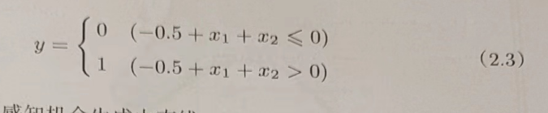
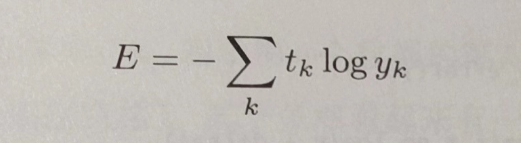
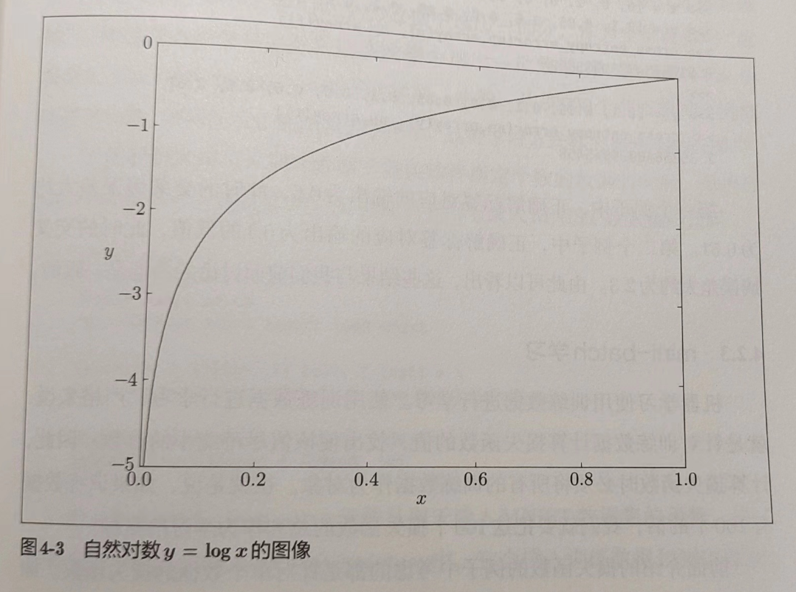
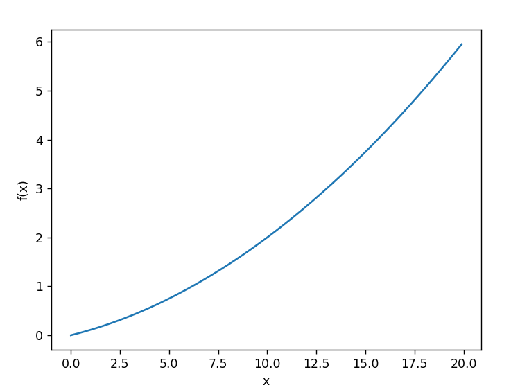
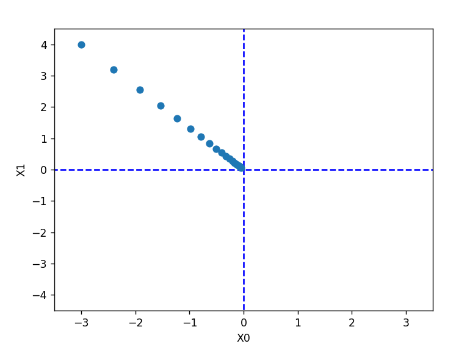
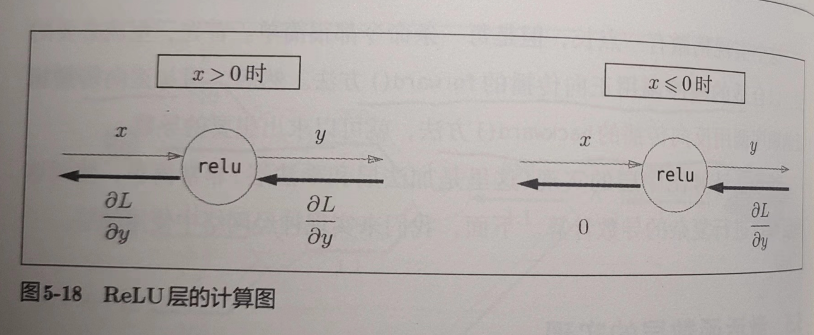
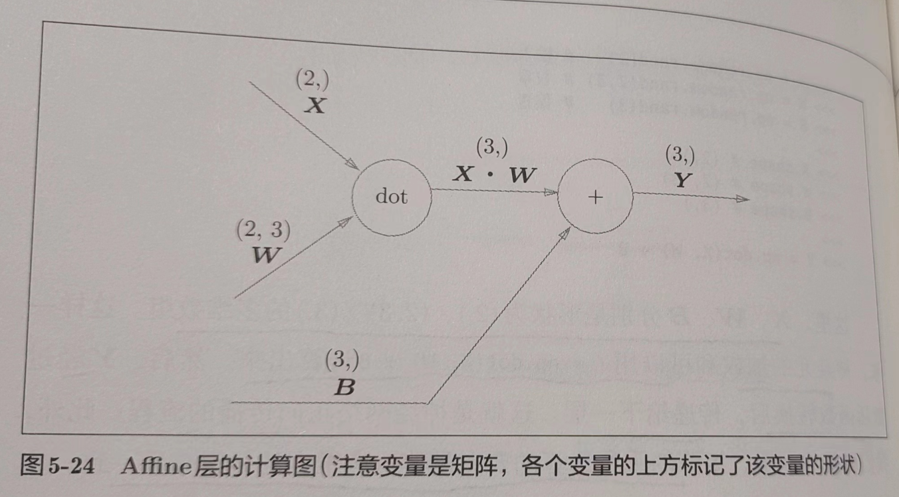

1. python 入门
1.5 Numpy
深度学习中经常出现数组和矩阵运算，Numpy 的数组类 numpy.array 提供了很多便捷的方法
1.5.1 导入 Numpy
import numpy as np
1.5.2 生成 Numpy 数组
np.array()，接收 python 列表，生成 Numpy 数组
x = np.array([1.0, 2.0, 3.0])
print(x)
print(type(x))
1.5.3 Numpy 的数学运算
x = np.array([1.0, 2.0, 3.0])
y = np.array([2.0, 4.0, 6.0])
print(x + y)
print(x - y)
print(x * y)
print(x / y)
需要注意，用于计算的数组的元素个数要相同
‘对应元素的’的英文是 element-wise，而 numpy 不仅可以进行 element-wise 运算，还可以和单一的数值（标量）组合起来进行计算。此时，需要在 numpy 数组的各个元素和标量之间进行计算，这个功能也称为广播
x = np.array([1.0, 2.0, 3.0])
print(x / 2.0)
1.5.4 Numpy 的 N 维数组
numpy 可以生成多维数组
A = np.array([[1, 2], [3, 4]])
print(A)
print(A.shape)
print(A.dtype)
shape 可以查看矩阵的形状，dtype 可以查看矩阵元素的数据类型
B = np.array([[3, 0], [0, 6]])
print(A + B)
print(A * B)
矩阵运算可以在相同形状的矩阵间以对应元素的方式进行。也可以通过标量（单一数值）对矩阵进行算术运算。这也是基于广播的功能
print(A)
print(A * 10)
数学上将一维数组称为‘向量’，将二维数组称为‘矩阵’，将一般化后的向量或矩阵等统称为‘张量’（tensor）。本书将二维数组称为矩阵，三维及以上称为‘张量’或‘多维数组’
1.5.5 广播
numpy 中形状不同的数组之间也可以进行运算。之前的例子中，2x2 的矩阵和标量 10 之间进行了乘法运算。这个过程中，标量 10 被扩展成 2x2 的形状，然后再与矩阵 A 进行乘法运算。这个功能就是广播

1.5.6 访问元素
X = np.array([[51, 55], [14, 19], [0, 4]])
print(X)
print(X[0]) # 第0行
print(X[0][1]) # (0,1)的元素
使用 for 遍历
for row in X:
print(row)
使用数组访问
X = X.flatten() # 将X转为一维数组
print(X)
print(X[np.array([0, 2, 4])]) # 获取索引为0、2、4的元素
通过这个标记法，可以获取满足一定条件的元素。例如，获取 x 中大于 15 的元素
print(X > 15)
print(X[X > 15])
通过不等号得到了布尔型数组，并通过布尔型数组取出 X 的各个元素（取出 True 对应的元素）
- python 等动态语言一般比 c 和 c++等静态语言（编译型）运算速度慢，所以很多追求性能的场景，人们用 c、c++编写，然后让 python 调用，numpy 也是如此
1.6 Matplotlib
图形绘制和可视化的库
1.6.1 绘制简单图形
sin 函数曲线
import numpy as np
import matplotlib.pyplot as plt
# 生成数据
x = np.arange(0, 6, 0.1) # 以0.1为步长（单位），生成0到6的数据
y = np.sin(x)
# 绘制图形
plt.plot(x, y)
plt.show()

1.6.2 pyplot 的功能
在刚才的 sin 函数图形中追加 cos 函数的图形，并尝试使用 pyplot 的添加标题和 x 轴标签名等其他功能
import numpy as np
import matplotlib.pyplot as plt
plt.switch_backend('TkAgg')
# 绘制sin函数曲线
# 生成数据
x = np.arange(0, 6, 0.1) # 以0.1为步长（单位），生成0到6的数据
y1 = np.sin(x)
y2 = np.cos(x)
# 绘制图形
plt.plot(x, y1, label='cos')
plt.plot(x, y2, linestyle='--', label='cos') # 用虚线绘制
plt.xlabel('x') # x轴标签
plt.ylabel('y') # y轴标签
plt.title('sin & cos') # 标题
plt.legend()
plt.show()

1.6.3 显示图像
pyplot 提供了显示图形的方法 imshow()。此外，还可以使用 matplotlib.image 里的 imread() 读取图像
import matplotlib.pyplot as plt
from matplotlib.image import imread
img = imread('lena.jpg') # 读入图像（设定合适的路径）
plt.imshow(img)
plt.show()

2. 感知机
感知机(perceptron)是由美国学者 Frank Rosenblatt 在 1957 年提出的。它作为神经网络（深度学习）的起源的算法，是学习神经网络和深度学习的重要一环
- 严格地说，本章所说的感知机应该称为‘人工神经元’或‘朴素感知机’，但是因为很多基本原理是共通的，所以这里简单称为‘感知机’
2.1 感知机是什么
感知机接收多个输入信号，输出一个信号。感知机的信号会形成流，向前方传递信息。感知机的信号只有‘流’/‘不流’(1/0)两种取值。本书中，0 表示‘不传递信号’，1 表示‘传递信号’
下图是一个接收两个输入信号的感知机的例子。x1、x2 是输入信号，y 是输出信号，w1、w2 是权重。圆形是‘神经元’或‘节点’。输入信号被送往神经元时，会被分别乘以固定的权重(w1x1,w2x2)。神经元会计算传送过来的信号的总和，只有这个总和超过了某个界限值时，才会输出 1。这也称为‘神经元被激活’。这个界限值称为阈值，用符号 θ 表示

感知机的多个输入信号都有各自固有的权重，发挥着控制各个信号的重要性的作用。也就是说，权重越大，对应该权重的信号的重要性就越高
- 权重相当于电流里所说的电阻。电阻是决定电流流动难度的参数，电阻越低，通过的电流就越大。而感知机的权重则是值越大，通过的信号就越大。在控制信号流动难度（或者流动容易度）这一点上的作用是一样的。
2.2 简单逻辑电路
2.2.1 与门（AND gate）
与门是有两个输入和一个输出的门电路。与门仅在两个输入均为 1 时输出 1，其他时候输出 0
如果用感知机来表示，怎么确定 w1、w2、θ 的值才能满足该真值表？
实际上，满足该条件的参数的选择方法有无数个。比如(w1,w2,θ)=(0.5,0.5,0.7) or (w1,w2,θ)=(0.5,0.5,0.8) or (w1,w2,θ)=(1.0,1.0,1.0)时。设定这样的参数后，仅当 x1 和 x2 同时为 1 时，信号的加权总和才会超过给定的阈值 θ。
2.2.2 与非门(NAND gate)和或门
与非门就是颠倒了与门的输出。仅当 x1 和 x2 同时为 1 时输出 0，其他时候则输出 1

感知机表示与非门，只需要将实现与门的参数值的符号取反就可以实现
与门是‘只要有一个输入信号是 1，输出就为 1’的逻辑电路
与门、与非门、或门的感知机构造是一样的。它们只有参数的值（权重和阈值）不同。也就是说，相同构造的感知机只要调整参数的值，就可以变成不同的逻辑电路
- 这里我们人为决定感知机参数，看着真值表这种‘训练数据’，人工考虑了参数的值。而机器学习的课题就是将这个决定参数值的工作交给计算机自动进行。‘学习’是确定合适参数的过程，人要做的就是思考感知机的构造（模型），并将训练数据交给计算机。
2.3 感知机的实现
2.3.1 简单的实现
先定义一个接收参数 x1 和 x2 的 AND 函数
def AND(x1, x2):
w1, w2, theta = 0.5, 0.5, 0.7
tmp = x1 * w1 + x2 * w2
if tmp <= theta:
return 0
elif tmp > theta:
return 1
在函数内初始化参数 w1、w2、theta，但输入的加权总和超过阈值时返回 1，否则返回 0
print(AND(0, 0)) # 0
print(AND(0, 1)) # 0
print(AND(1, 0)) # 0
print(AND(1, 1)) # 1
2.3.2 导入权重和偏置
将之前的式子的阈值换成偏置，即 θ 换成-b

改变后，表达的内容依然完全相同。b 称为偏置，w 称为权重，感知机计算输入信号和权重的乘积，然后加上偏置，如果这个值大于 0 则输出 1，否则输出 0。
import numpy as np
x = np.array([0, 1]) # 输入
w = np.array([0.5, 0.5]) # 权重
b = -0.7 # 偏置
print(w * x)
np.sum(w * x)
print(np.sum(w * x) + b)
# -0.19999999999999996 大约为-0.2（由浮点小数造成的运算误差）
这里 numpy 数组乘法运算，当两个数组的元素个数相同时，各个元素分别相乘，之后 sum(w*x)计算相乘后的各个元素的总和。最后加上偏置，完成计算
2.3.3 使用权重和偏置的实现
def AND(x1, x2):
x = np.array([x1, x2])
w = np.array([0.5, 0.5])
b = -0.7
tmp = np.sum(w * x) + b
if tmp <= 0:
return 0
else:
return 1
权重 w1、w2 是控制输入信号的重要性的参数，而偏置是调整神经元被激活的容易程度（输出信号为 1 的程度）的参数。
- 偏置这个术语，有‘穿木屐’的效果，即在没有任何输入时（输入为 0 时），给输出穿上多高的木屐（加上多大的值）的意思。
继续实现与非门和或门
def NAND(x1, x2):
x = np.array([x1, x2])
w = np.array([-0.5, -0.5])
b = 0.7
tmp = np.sum(w * x) + b
if tmp <= 0:
return 0
else:
return 1
def OR(x1, x2):
x = np.array([x1, x2])
w = np.array([0.5, 0.5])
b = -0.2
tmp = np.sum(w * x) + b
if tmp <= 0:
return 0
else:
return 1
2.4 感知机的局限性
2.4.1 异或门
异或门也称为逻辑异或电路。仅当 x1 或 x2 中的一方为 1 时，才会输出 1（‘异或’是拒绝其他的意思）。
前面介绍的感知机无法实现这个异或门。
我们将或门的动作形象化。或门的情况下，当权重参数(b,w1,w2)=(-0.5,1.0,1.0)时，可以用下面的式子表示

该式表示感知机会生成由直线-0.5 + x1 + x2 = 0 分割开的两个空间。其中一个空间输出 1，另一个空间输出 0

但是如何用一条直线分割出异或的 0、1 输出空间？事实上，用一条直线无法将 0、1 分开

2.4.2 线性和非线性
感知机的局限性就在于它只能表示由一条直线分割的空间。如果用曲线分割，就可以实现。由曲线分割而成的空间称为非线性空间，由直线分割而成的空间称为线性空间。线性和非线性这两个术语在机器学习领域很常见。
2.5 多层感知机
感知机的绝妙之处在于它可以‘叠加层’（通过叠加层来表示异或门或门是本节的要点）。我们暂不考虑叠加层具体是指什么，先从其他视角来思考一下异或门的问题。
2.5.1 已有门电路的组合
异或门制作方法有很多，其中之一就是与门、或门、与非门的组合。这几个门我们用下面的符号表示，图 2-9 中与非门前端的〇表示反转输出的意思

2.5.2 异或门的实现
def XOR(x1, x2):
s1 = NAND(x1, x2)
s2 = OR(x1, x2)
y = AND(s1, s2)
return y
print(XOR(0, 0)) # 0
print(XOR(0, 1)) # 1
print(XOR(1, 0)) # 1
print(XOR(1, 1)) # 0
异或门是一种多层结构的神经网络。这里，将最左边的一列称为第 0 层，中间的一列称为第一层，最右边的一列称为第 2 层。
实际上，与门、或门是单层感知机，而异或门是 2 层感知机。叠加了多层的感知机也称为多层感知机(multi-layered perceptron)
- 上图由 3 层构成，但是因为拥有权重的实际上只有两层（第 0 层到第 1 层，第 1 层和第 2 层之间），所以称为‘2 层感知机’，也有的文献认为这是由 3 层构成，所以称为‘3 层感知机’
在这种多层感知机中，第一层输出变为第二层输入，数据在之间不断传送。通过叠加层，感知机能进行更加灵活的表示。
2.6 从与非门到计算机
多层感知机可以实现比之前见到的电路更复杂的电路。比如加法运算的加法器、二进制转十进制的编码器、满足某些条件就输出 1 的电路（用于等价检验的电路）……甚至可以表示计算机
计算机是处理信息的机器。输入信息，会按照某个既定规则进行计算，然后输出，这和感知机是一样的
只需要通过与非门的组合，就能再现计算机
- 拓展阅读：《计算机系统要素：从零开始构建现代计算机》
多少层（层级多深）的感知机可以表示计算机？理论上可以说 2 层感知机就可以构建计算机。有研究证明，2 层感知机（严格地说是激活函数使用了非线性的 sigmoid 函数的感知机）可以表示任意函数。但是使用 2 层感知机的构造，通过设定合适的权重来构建计算机是非常累人的事。
实际上，用与非门等低层元件构建计算机的情况下，分阶段地制作所需的零件（模块）会比较自然，即先实现与门和或门，然后实现半加器和全加器，接着实现算数逻辑单元（ALU），然后实现 CPU。使用这种叠加了多层的构造来实现是比较自然的流程。
2.7 小结
- 感知机是具有输入和输出的算法。给定一个输入后，将输出一个既定的值
- 感知机将权重和偏置设定为参数。
- 使用感知机可以表示与门和或门等逻辑电路
- 异或门无法通过单层感知机来表示。
- 使用 2 层感知机可以表示异或门
- 单层感知机只能表示线性空间，而多层感知机可以表示非线性空间。
- 多层感知机（在理论上）可以表示计算机。
3. 神经网络
神经网络的出现就是为了解决设定权重的工作，即机器自动从数据中学习，确定合适的、能符合预期的输入与输出的权重。
3.1 从感知机到神经网络
神经网络和感知机有很多共同点，这里主要介绍差异
3.1.1 神经网络例子
下图 3-1 表示神经网络，我们将最左边的一列称为输入层，最右边的一列称为输出层，中间的一列称为中间层。中间层有时也称为隐藏层。‘隐藏’的意思是，隐藏层的神经元（和输入层、输出层不同）肉眼看不见。另外，本书的层号从零开始计算，为了方便用 python 实现神经网络

- 图 3-1 的网络一共由 3 层神经元组成，当实际上只有 2 层神经元有权重，因此本书将其称为‘2 层网络’。也有的书会把它称为 3 层网络。
那么，神经网络中的信号是如何传递的呢？
3.1.2 复习感知机
思考下图中的网络结构


b 是被称为偏置的参数，用于控制神经元被激活的容易程度；而 w1 和 w2 是表示各个信号的权重的参数，用于控制各个信号的重要性
在图 3-2 中没有把 b 画出来，如果要明确表示 b，可以像图 3-3 那样。图 3-3 添加了权重为 b 的输入信号 1。这个感知机将 x1、x2、1 三个信号作为神经元的输入，将其和各自的权重相乘后，传送至下一个神经元。在下一个神经元中，计算这些加权信号的总和。如果这个总和超过 0，则输出 1，否则输出 0。
为了简化式子（3.1），我们引入一个新函数 h(x)来表示这种分情况的动作（超过 0 则输出 1，否则输出 0）。


在式子(3.2)中，输入信号的总和会被函数 h(x)转换，转换后的值就是输出 y。
3.1.3 激活函数登场
h(x)函数会将输入信号的总和转换为输出信号，这种函数一般称为激活函数(activation function)。它的作用在于决定如何来激活输入信号的总和。
改写式子（3.2），将其分为两个阶段处理，先计算输入信号的加权总和，然后用激活函数转换这一总和。
首先式子（3.4）计算加权输入信号和偏置的总和，记为 a，然后式子（3.5）用 h()函数将 a 转换为输出 y

- 本书在使用‘感知机’一词时，没有严格统一它所指的算法。一般而言，‘朴素感知机’是指单层网络，指的是激活函数使用了阶跃函数的模型。‘多层感知机’是指神经网络，即使用 sigmoid 函数等平滑的激活函数的多层网络。
3.2 激活函数
式子（3.3）表示的激活函数以阈值为界，一旦输入超过阈值，就切换输出。这样的函数称为‘阶跃函数’。感知机中使用了阶跃函数作为激活函数。如果使用其他的激活函数，就可以进入神经网络的世界了。
3.2.1 sigmoid 函数
神经网络中最常使用的一个激活函数就是 sigmoid 函数
exp(-x)是 e^(-x)的意思。e 是纳皮尔常数 2.7182···。函数，就是给定某个输入后，会返回某个输出的转换器。
神经网络中用 sigmoid 函数作为激活函数，进行信号的转换，转换后的信号被传送给下一个神经元。感知机和神经网络的主要区别就在于这个激活函数。其他方面，比如多层连接的构造、信号的传递方法等，基本和感知机一致。
3.2.2 阶跃函数的实现
def step_function(x):
if x > 0:
return 1
else:
return 0
改为支持 numpy 数组的实现
def step_function(x):
y = x > 0
return y.astype(np.int)
上面使用了 numpy 的技巧
import numpy as np
x = np.array([-1.0, 1.0, 2.0])
y = x > 0
print(y) # [False True True]
在条件运算后，符合条件的变为 true，不符合的变为 false，生成一个布尔型数组。但是阶跃函数需要输出 int 类型，所以需要转换
y = y.astype(np.int)
print(y) # [0 1 1]
3.2.3 阶跃函数的图形
import numpy as np
import matplotlib.pylab as plt
plt.switch_backend('TkAgg')
# 阶跃函数
def step_function(x):
return np.array(x > 0, dtype=np.int)
x = np.arange(-5.0, 5.0, 0.1)
y = step_function(x)
plt.plot(x, y)
plt.ylim(-0.1, 1.1) # 指定y轴的范围
plt.show()

阶跃函数以 0 为界，输出从 0 开始切换为 1（或者从 1 切换为 0），值呈阶梯式变化，所以称为阶跃函数
3.2.4 sigmoid 函数的实现
def sigmoid(x):
# exp(-x) -> e^(-x)
return 1 / (1 + np.exp(-x))
x = np.array([-1.0, 1.0, 2.0])
# [0.26894142 0.73105858 0.88079708]
print(sigmoid(x))
该函数可以支持 np 数组，因为 np 有广播机制，可以支持标量和数组的运算，会将标量的计算运用到每个数组元素
画图
x = np.arange(-5.0, 5.0, 0.1)
y = sigmoid(x)
plt.plot(x, y)
plt.ylim(-0.1, 1.1) # 指定y轴的范围
plt.show()

3.2.5 sigmoid 函数和阶跃函数的比较
首先，平滑性不同：sigmoid 函数是一条平滑的曲线，输出随着输入发生连续性的变化。而阶跃函数以 0 为界，输出发生急剧性的变化。sigmoid 函数的平滑性对神经网络的学习具有重要意义。
另一个不同点是，阶跃函数只能返回 0 或 1，而 sigmoid 可以返回 0.731…、0.880…等实数。也就是说，感知机中神经元之间流动的是 0 或 1 的二元信号，而神经网络中流动的是连续的实数值信号。
虽然它们在平滑性上有差异，但是从宏观视角看，有着相似的形状。它们的结构都是‘输入小时，输出接近 0（为 0）；随着输入增大，输出向 1 靠近（变成 1）’。即，当输入信号为重要信息时，阶跃函数和 sigmoid 函数都会输出较大的值；当输入信号为不重要的信息时，两者都输出较小的值。还有一个共同点，不管输入信号多小或多大，输出信号都在 0 到 1 之间。
3.2.6 非线性函数
还有一个共同点，sigmoid 函数是一条曲线，阶跃函数是一条像阶梯一样的折线。两者都属于非线性函数
- 函数是输入某个值后会返回一个值的转换器。而这个转换器输入某个值后，输出值是输入值的常数倍的函数称为线性函数（h(x)=cx）。因此，线性函数是一条笔直的直线。
神经网络的激活函数必须使用非线性函数。因为使用线性函数的话，加深神经网络的层数就没意义了。
线性函数的问题在于，无论如何加深层数，总是存在与之等效的‘无隐藏层的神经网络’。比如线性函数 h(x)=cx 作为激活函数，把 y(x)=h(h(h(x)))的运算对应 3 层神经网络。这个运算会进行 y(x)=c * c * c * x 的乘法运算，但是同样的处理可以由 y(x)=ax (a=c^3) 这一没有隐藏层的神经网络来表示。也就是说，线性函数作为激活函数，无法发挥多层网络带来的优势
3.2.7 ReLU 函数
在神经网络的发展历史上，很早就开始使用 sigmoid 函数了，最近则主要使用 ReLU(Rectified Linear Unit)函数
ReLU 函数在输入大于 0 时，直接输出该值；在输入小于等于 0 时，输出 0
ReLU 的代码实现很简单
def relu(x):
# 大于0输出x,小于0输出0
return np.maximum(0, x)
这里使用了 numpy 的 maximum 函数，它会从输入的数值中选择较大的那个值进行输出
3.3 多维数组的运算
掌握多维数组的运算，就可以高效地实现神经网络。
3.3.1 多维数组
多维数组就是‘数字的集合’，数字排成一列的集合、排成长方形的集合、排成三维状或（更一般化的）N 维状的集合……
import numpy as np
A = np.array([1, 2, 3, 4])
# [1 2 3 4]
print(A)
# 1
print(np.ndim(A))
# 4
print(A.shape[0])
数组的维数可以通过 np.ndim()函数获得。此外，数组的形状可以通过实例变量 shape 获得。A.shape 的结果是个元组
下面生成二维数组
B = np.array([[1, 2], [3, 4], [5, 6]])
# [[1 2]
# [3 4]
# [5 6]]
print(B)
# 2
print(np.ndim(B))
# (3, 2)
print(B.shape)
3x2 表示第一个维度有 3 个元素，第二个维度有 2 个元素。第一个维度是第 0 维，第二个维度是第 1 维（索引从 0 开始）。二维数组也称为矩阵（matrix）。数组的横向排列称为行（row），纵向排列称为列（column）。
3.3.2 矩阵乘法
矩阵的乘积是通过左边矩阵的行（横向）和右边矩阵的列（纵向）以对应元素的方式相乘后再求和而得到的。并且，运算的结果保存为新的多维数组的元素。比如A的第一行和B的第一列的乘积结果是新数组的第一行第一列的元素。
A = np.array([[1, 2], [3, 4]])
# (2, 2)
print(A.shape)
B = np.array([[5, 6], [7, 8]])
# (2, 2)
print(B.shape)
# [[19 22]
# [43 50]]
print(np.dot(A, B))
乘积也叫点积，可以用 np.dot()计算。和一般的运算（+或*等）不同，矩阵的乘积运算中，操作数（A、B）的顺序不同，结果也会不同。
A = np.array([[1, 2, 3], [4, 5, 6]])
# (2, 3)
print(A.shape)
B = np.array([[1, 2], [3, 4], [5, 6]])
# (3, 2)
print(B.shape)
# [[22 28]
# [49 64]]
print(np.dot(A, B))
注意矩阵的形状，A的第一维的元素个数（列数）必须和B的第 0 维的元素个数（行数）相等，才能进行乘法计算
C = np.array([[1, 2], [3, 4]])
# (2, 2)
print(C.shape)
# (2, 3)
print(A.shape)
# File "<__array_function__ internals>", line 6, in dot
# ValueError: shapes (2,3) and (2,2) not aligned: 3 (dim 1) != 2 (dim 0)
print(np.dot(A, C))
运算结果的形状是由A的行数和B的列数构成的。
A = np.array([[1, 2], [3, 4], [5, 6]])
# (3, 2)
print(A.shape)
B = np.array([7, 8])
# (2,)
print(B.shape)
# [23 53 83]
print(np.dot(A, B))
3.3.3 神经网络的内积
我们使用 numpy 矩阵来实现神经网络，这里省略了偏置和激活函数
X = np.array([1, 2])
# (2,)
print(X.shape)
W = np.array([[1, 3, 5], [2, 4, 6]])
# [[1 3 5]
# [2 4 6]]
print(W)
# (2, 3)
print(W.shape)
# (1,2) * (2,3) -> (1,3)
Y = np.dot(X, W)
# [ 5 11 17]
print(Y)
使用 np.dot 可以一次运算出结果，这种技巧很重要。
3.4 三层神经网络的实现
我们实现从输入到输出的（前向）处理。

3.4.1 符号确认
我们引入 w12^(1)和 a1^(1)等符号。
在下图中，权重和隐藏层的神经元的右上角有一个”(1)”，它表示权重和神经元的层号（即第一层的权重、第一层的神经元）。此外，权重的右下角有两个数字，它们是后一层的神经元和前一层的神经元的索引号。比如 w12^(1)表示前一层的第 2 个神经元 x2 到后一层的第 1 个神经元 a1^(1)的权重。权重右下角按照“后一层的索引号、前一层的索引号”的顺序排列。
3.4.2 各层间信号传递的实现
看一下从输入层到第 1 层的第 1 个神经元的信号传递过程。
图中新增了表示偏置的神经元”1”。它的右下角的索引号只有一个，因为前一层的偏置神经元（神经元‘1’）只有一个。
- 任何前一层的偏置神经元‘1’都只有一个。偏置权重的数量取决于后一层的神经元的数量（不包括后一层的偏置神经元‘1’）————译者注
用数学式表示 a1^(1)。通过加权信号和偏置的和按如下方式进行计算
用矩阵的乘法运算，可以间第一层的加权和表示成下面的式
X = np.array([1.0, 0.5])
W1 = np.array([[0.1, 0.3, 0.5], [0.2, 0.4, 0.6]])
B1 = np.array([0.1, 0.2, 0.3])
print(W1.shape) # (2, 3)
print(X.shape) # (2,)
print(B1.shape) # (3,)
A1 = np.dot(X, W1) + B1
接下来，隐藏层的加权和（加权信号和偏置的总和）用 a 表示，被激活函数转换后的信号用 z 表示。此外，图中 h()表示激活函数，这里使用的是 sigmoid 行数。
Z1 = sigmoid(A1)
print(A1) # [0.3 0.7 1.1]
print(Z1) # [0.57444252 0.66818777 0.75026011]
下面来实现第 1 层到第 2 层的信号传递
W2 = np.array([[0.1, 0.4], [0.2, 0.5], [0.3, 0.6]])
B2 = np.array([0.1, 0.2])
print(Z1.shape) # (3,)
print(W2.shape) # (3, 2)
print(B2.shape) # (2,)
A2 = np.dot(Z1, W2) + B2
Z2 = sigmoid(A2)
最好是第 2 层到输出层的信号传递。输出层的实现也和之前的实现基本相同。不过，最后的激活函数和之前的隐藏层有所不同
def identity_function(x):
return x
W3 = np.array([[0.1, 0.3], [0.2, 0.4]])
B3 = np.array([0.1, 0.2])
A3 = np.dot(Z2, W3) + B3
Y = identity_function(A3) # 或 Y = A3
这里定义了 identity_function（也叫恒等函数），会将输入按原样输出，其实没必要定义这个，这里是为了和之前的流程保持统一。输出层的激活函数用 σ()表示（σ 读作 sigma），不同于隐藏层的激活函数 h()
- 输出层所用的激活函数要根据求解问题的性质决定。一般地，回归问题可以使用恒等函数，二元分类问题可以使用 sigmoid 函数，多元分类问题可以使用 softmax 函数。
3.4.3 代码实现小结
def init_network():
network = {}
network['W1'] = np.array([[0.1, 0.3, 0.5], [0.2, 0.4, 0.6]])
network['b1'] = np.array([0.1, 0.2, 0.3])
network['W2'] = np.array([[0.1, 0.4], [0.2, 0.5], [0.3, 0.6]])
network['b2'] = np.array([0.1, 0.2])
network['W3'] = np.array([[0.1, 0.3], [0.2, 0.4]])
network['b3'] = np.array([0.1, 0.2])
return network
def forward(network, x):
W1, W2, W3 = network['W1'], network['W2'], network['W3']
b1, b2, b3 = network['b1'], network['b2'], network['b3']
a1 = np.dot(x, W1) + b1
z1 = sigmoid(a1)
a2 = np.dot(z1, W2) + b2
z2 = sigmoid(a2)
a3 = np.dot(z2, W3) + b3
y = identity_function(a3)
return y
network = init_network()
x = np.array([1.0, 0.5])
y = forward(network, x)
print(y) # [0.31682708 0.69627909]
3.5 输出层的设计
神经网络可以用在分类问题和回归问题上，根据情况改变输出层的激活函数。一般地，回归问题用恒等函数，分类问题用 softmax 函数。
- 机器学习的问题大致可以分为分类问题和回归问题。分类问题是数据属于哪一个类别的问题。回归问题是根据某个输入预测一个（连续的）数值的问题
3.5.1 恒等函数和 softmax 函数
恒等函数将输入按原样输出，对于输入的信息，不加任何改动地直接输出。
exp(x)表示 e^x 的指数函数（e 是纳皮尔常数 2.7182···），假设输出层共有 n 个神经元，计算第 k 个神经元的输出 yk。softmax 函数的分字是输入信号 ak 的指数函数，分母是所有输入信号的指数函数的和。
用图表示 softmax 函数的话，可以看出，softmax 函数的输出通过箭头与所有输入信号相连。输出层的各个神经元都受到所有输入信号的影响。
# softmax
a = np.array([0.3, 2.9, 4.0])
exp_a = np.exp(a) # 指数函数
# [ 1.34985881 18.17414537 54.59815003]
print(exp_a)
sum_exp_a = np.sum(exp_a) # 指数函数的和
# 74.1221542101633
print(sum_exp_a)
y = exp_a / sum_exp_a
# [0.01821127 0.24519181 0.73659691]
print(y)
def softmax(a):
exp_a = np.exp(a)
sum_exp_a = np.sum(exp_a)
y = exp_a / sum_exp_a
return y
3.5.2 实现 softmax 函数时的注意事项
上面的实现虽然可以表示 softmax，但是会导致溢出问题。因为 softmax 涉及指数运算，而指数运算的值通常很大，比如 e^10 的值超过 20000，e^100 后面带 40 多个 0，e^1000 的结果返回一个表示无穷大的 inf。
- 计算机在处理‘数’时，数值必须在 4~8 字节的有限数据宽度内。这意味着数存在有效位数，可以表示的数值范围是有限的。因此，会出现超大值无法表示的问题（溢出问题）
可以改进 softmax 函数
在 softmax 函数的分子分母上都乘 C（任意常数），然后把 C 移动到指数函数 exp 中，记为 logC，最后，把 logC 替换为 C’
这里的 C’可以是任何值，但是为了防止溢出，一般会使用输入信号中的最大值。
a = np.array([1010, 1000, 990])
# [nan nan nan]
print(np.exp(a) / np.sum(np.exp(a))) # softmax函数的计算
c = np.max(a)
# [ 0 -10 -20]
print(a - c)
# [9.99954600e-01 4.53978686e-05 2.06106005e-09]
print((np.exp(a - c) / np.sum(np.exp(a - c))))
def softmax(a):
c = np.max(a)
exp_a = np.exp(a - c)
sum_exp_a = np.sum(exp_a)
y = exp_a / sum_exp_a
return y
3.5.3 softmax 函数的特征
a = np.array([0.3, 2.9, 4.0])
y = softmax(a)
# [0.01821127 0.24519181 0.73659691]
print(y)
# 1.0
print(np.sum(y))
softmax 的输出是 0~1 之间的实数。而且输出值的总和为 1。这是一个重要特性，因为有了这个性质，我们才把 softmax 函数的输出解释为‘概率’
需要注意的是，即使用了 softmax 函数，各个元素间的大小关系也不会改变。这是因为指数函数（y=exp(x)）是单调递增函数。
一般而言，神经网络只把输出值最大的神经元所对应的类别作为识别结果。并且，即使使用 softmax 函数，输出值最大的神经元的位置也不会变。因此，神经网络进行分类时，输出层的 softmax 函数可以省略。
- 求解机器学习问题的步骤分为‘学习’和‘推理’两个阶段。推理阶段一般会忽略输出层的 softmax 函数。在输出层使用 softmax 函数是因为它和神经网络的学习有关
3.5.4 输出层的神经元数量
输出层的神经元数量需要根据待解决的问题来决定。对于分类问题，输出层的神经元数量一般设定为类别的数量。
3.6 手写数字识别
我们假设学习已经结束，使用学习到的参数，先实现神经网络的‘推理处理’。这个推理处理也称为神经网络的前向传播(forward propagation)
- 使用神经网络解决问题时，也需要首先使用训练数据（学习数据）进行权重参数的学习；进行推理时，使用刚才学习到的参数，对输入的数据进行分类
3.6.1 MNIST 数据集
MNIST 数据集是由 0 到 9 的数字图像构成的。训练图像有 6 万多张，测试图像有 1 万多张，这些图像可用于学习和推理。一般使用方法是，先用训练图像进行学习，再用学习到的模型度量能在多大程度上对测试图像进行正确的分类
MNIST 的图像数据是 28x28 像素的灰度图像（1 通道），各个通道的取值在 0 到 255 之间。每个图像数据都相应地标有‘7’、‘2’、‘1’等标签。
本书提供了脚本 mnist.py 来下载 MNIST 数据集并进行了转化为 numpy 数组等处理
# coding: utf-8
try:
import urllib.request
except ImportError:
raise ImportError('You should use Python 3.x')
import os.path
import gzip
import pickle
import os
import numpy as np
url_base = 'http://yann.lecun.com/exdb/mnist/'
key_file = {
'train_img':'train-images-idx3-ubyte.gz',
'train_label':'train-labels-idx1-ubyte.gz',
'test_img':'t10k-images-idx3-ubyte.gz',
'test_label':'t10k-labels-idx1-ubyte.gz'
}
dataset_dir = os.path.dirname(os.path.abspath(__file__))
save_file = dataset_dir + "/mnist.pkl"
train_num = 60000
test_num = 10000
img_dim = (1, 28, 28)
img_size = 784
def _download(file_name):
file_path = dataset_dir + "/" + file_name
if os.path.exists(file_path):
return
print("Downloading " + file_name + " ... ")
urllib.request.urlretrieve(url_base + file_name, file_path)
print("Done")
def download_mnist():
for v in key_file.values():
_download(v)
def _load_label(file_name):
file_path = dataset_dir + "/" + file_name
print("Converting " + file_name + " to NumPy Array ...")
with gzip.open(file_path, 'rb') as f:
labels = np.frombuffer(f.read(), np.uint8, offset=8)
print("Done")
return labels
def _load_img(file_name):
file_path = dataset_dir + "/" + file_name
print("Converting " + file_name + " to NumPy Array ...")
with gzip.open(file_path, 'rb') as f:
data = np.frombuffer(f.read(), np.uint8, offset=16)
data = data.reshape(-1, img_size)
print("Done")
return data
def _convert_numpy():
dataset = {}
dataset['train_img'] = _load_img(key_file['train_img'])
dataset['train_label'] = _load_label(key_file['train_label'])
dataset['test_img'] = _load_img(key_file['test_img'])
dataset['test_label'] = _load_label(key_file['test_label'])
return dataset
def init_mnist():
download_mnist()
dataset = _convert_numpy()
print("Creating pickle file ...")
with open(save_file, 'wb') as f:
pickle.dump(dataset, f, -1)
print("Done!")
def _change_one_hot_label(X):
T = np.zeros((X.size, 10))
for idx, row in enumerate(T):
row[X[idx]] = 1
return T
def load_mnist(normalize=True, flatten=True, one_hot_label=False):
"""读入MNIST数据集
Parameters
----------
normalize : 将图像的像素值正规化为0.0~1.0
one_hot_label :
one_hot_label为True的情况下，标签作为one-hot数组返回
one-hot数组是指[0,0,1,0,0,0,0,0,0,0]这样的数组
flatten : 是否将图像展开为一维数组
Returns
-------
(训练图像, 训练标签), (测试图像, 测试标签)
"""
if not os.path.exists(save_file):
init_mnist()
with open(save_file, 'rb') as f:
dataset = pickle.load(f)
if normalize:
for key in ('train_img', 'test_img'):
dataset[key] = dataset[key].astype(np.float32)
dataset[key] /= 255.0
if one_hot_label:
dataset['train_label'] = _change_one_hot_label(dataset['train_label'])
dataset['test_label'] = _change_one_hot_label(dataset['test_label'])
if not flatten:
for key in ('train_img', 'test_img'):
dataset[key] = dataset[key].reshape(-1, 1, 28, 28)
return (dataset['train_img'], dataset['train_label']), (dataset['test_img'], dataset['test_label'])
if __name__ == '__main__':
init_mnist()
使用方式
import sys, os
sys.path.append(os.pardir) # 为了导入父目录中的文件而进行的设定
from dataset.mnist import load_mnist
(x_train, t_train), (x_test, t_test) = load_mnist(flatten=True, normalize=False)
# 输出各个数据的形状
print(x_train.shape) # (60000, 784)
print(t_train.shape) # (60000,)
print(x_test.shape) # (10000, 784)
print(t_test.shape) # (10000,)
load_mnist 函数有三个参数，比如 load_mnist(normalize=True, flatten=True, one_hot_label=False)中，
- 第一个参数 normalize 设置是否将输入图像正规化（正则化）为 0.0
1.0 的值。如果为 False，则输入图像的像素会保持原来的 0255。 - 第 2 个参数 flatten 设置是否展开输入图像（变成 1 维数组）。如果为 False，则输入图像为 1x28x28 的三位数组，如果为 True，则输入图像会保存为由 784 个元素构成的一维数组。
- 第三个参数设置是否将标签保存为 onehot 表示(one-hot representation)。one-hot 表示是仅正确解标签为 1，其余为 0 的数组，如[0,0,1,0,0,0,0,0,0,0]。当 one_hot_label 为 False 时，只是像 7、2 这样简单地保存正确解标签；当为 True 时，则保存为 onehot 表示
python 有 pickle 这个便利的功能。可以将程序运行中的对象保存为文件。如果加载保存过的 pickle 文件，可以立刻复原之前程序运行中的对象。load_mnist 就是利用了这个功能，在第二次读取时快速读取保存在本地的数据集 pkl
我们用 PIL(Python Image Library)来显示图像
import sys, os
sys.path.append(os.pardir) # 为了导入父目录中的文件而进行的设定
import numpy as np
from dataset.mnist import load_mnist
from PIL import Image
def img_show(img):
pil_img = Image.fromarray(np.uint8(img))
pil_img.show()
(x_train, t_train), (x_test, t_test) = load_mnist(flatten=True, normalize=False)
img = x_train[0]
label = t_train[0]
print(label) # 5
print(img.shape) # (784,)
img = img.reshape(28, 28) # 把图像的形状变成原来的尺寸
print(img.shape) # (28, 28)
img_show(img)
这里使用了 flatten=True，所有读入的是一维数组，在显示图像时需要（通过 reshape）转为原本的尺寸（28x28），而图像被保存为 numpy 数组，所以需要通过 Image.fromarray()来转换为图像
3.6.2 神经网络的推理处理
接下来实现推理处理。首先，输入层有 784 个神经元（图像大小 28x28=784），输出层有 10 个神经元（0~9，是 10 分类）。此外，这个神经网络有两个隐藏层，第一个隐藏层有 50 个神经元，第二个隐藏层有 100 个神经元。（50 和 100 可以设置为任意值）
先定义函数
def get_data():
(x_train, t_train), (x_test, t_test) = \
load_mnist(flatten=True, normalize=True, one_hot_label=False)
return x_test, t_test
def init_network():
with open('sample_weight.pkl', 'rb') as f:
network = pickle.load(f)
return network
def predict(network, x):
W1, W2, W3 = network['W1'], network['W2'], network['W3']
b1, b2, b3 = network['b1'], network['b2'], network['b3']
a1 = np.dot(x, W1) + b1
z1 = sigmoid(a1)
a2 = np.dot(z1, W2) + b2
z2 = sigmoid(a2)
a3 = np.dot(z2, W3) + b3
y = softmax(a3)
return y
init_network()会读入保存在 pickle 文件 sample_weight.pkl 中的学习到的权重参数。这个文件以字典变量的形式保存了权重和偏置参数。这里假设学习已经完成，所以直接加载 pkl 文件
现在我们用这 3 个函数实现神经网络的推理处理。然后，评价它的识别精度(accuracy)，即能在多大程度上正确分类
x, t = get_data()
network = init_network()
accuracy_cnt = 0
for i in range(len(x)):
y = predict(network, x[i])
p = np.argmax(y) # 获取概率最高的元素的索引
if p == t[i]:
accuracy_cnt += 1
print(f'Accuracy: {str(float(accuracy_cnt) / len(x))}')
我们设置 normalize 为 True 后，函数内部会进行转换，将图像的各个像素除以 255，使得数据的值在 0.0~1.0 之间。先这样把数据限定到某个范围内的处理称为正规化（normalization）。此外，对神经网络的输入数据进行某种既定的转换称为预处理（pre-processing）
- 预处理很实用。实际上，很多预处理都会考虑到数据的整体分布。比如，利用数据整体的均值或标准差，移动数据，使数据整体以 0 为中心分布，或者进行正规化，把数据延展控制在一定范围内。除此之外，还有将数据整体的分布形状均匀化的方法，即数据白化（whitening）等。
3.6.3 批处理
现在我们来关注输入数据和权重参数的‘形状’
x, _ = get_data()
network = init_network()
W1, W2, W3 = network['W1'], network['W2'], network['W3']
# (10000, 784)
print(f'x shape: {x.shape}')
# (784,)
print(f'x[0] shape: {x[0].shape}')
# (784, 50)
print(f'w1 shape: {W1.shape}')
# (50, 100)
print(f'w2 shape: {W2.shape}')
# (100, 10)
print(f'w3 shape: {W3.shape}')
我们确认了这些多维数组的对应维度的元素个数是一致的（省略了偏置），最终结果也确实是元素个数为 10 的一维数组
但是当我们批量进行处理，假设一批有 100 个，则输入的 shape 为(100, 784)，输出形状则为(100,10)，也就是说，输入的 100 张图像的结果被一次性输出了。比如 x[0]和 y[0]中保存了第 0 张图像及其推理结果
这种打包式的输入数据称为‘批’(batch)
- 批处理对计算机的计算大有益处，可以大幅缩短每张图像的处理时间。因为大多数处理数值计算的库都进行了能够高效处理大型数组运算的最优化。并且，神经网络的运算中，当数据传送成为瓶颈时，批处理可以减轻数据总线的负荷（严格的讲，相对于数据读入，可以将更多的时间用在计算上）也就是说，批处理一次性计算大型数组比分开逐步计算各个小型数组速度更快
x, t = get_data()
network = init_network()
batch_size = 100 # 批数量
accuracy_cnt = 0
# 0~len(x) 每次 i+=batch_size
for i in range(0, len(x), batch_size):
x_batch = x[i:i + batch_size]
y_batch = predict(network, x_batch)
# 在每行找最大值所在列
p = np.argmax(y_batch, axis=1)
accuracy_cnt += np.sum(p == t[i:i + batch_size])
# Accuracy: 0.9352
print(f'Accuracy: {str(float(accuracy_cnt) / len(x))}')
# range的例子
# [0, 1, 2, 3, 4, 5, 6, 7, 8, 9]
print(list(range(0, 10)))
# [0, 3, 6, 9]
print(list(range(0, 10, 3)))
argmax 的例子
x = np.array([[0.1, 0.8, 0.1], [0.3, 0.1, 0.6], [0.2, 0.5, 0.3], [0.8, 0.1, 0.1]])
y = np.argmax(x, axis=1)
# [1 2 1 0]
print(y)
比较结果
# 比较结果
y = np.array([1, 2, 1, 0])
t = np.array([1, 2, 0, 0])
# [ True True False True]
print(y == t)
# y和t相同元素的个数
# 3
print(np.sum(y == t))
3.7 小结
本节介绍了神经网络的前向传播。神经网络和感知机在信号的按层传递上是相同的，但是在向下一个神经元发送信号的时候，改变信号的激活函数有很大差异，神经网络使用的是平滑变化的，而感知机是急剧变化的阶跃函数。
- 神经网络中的激活函数使用平滑变化的 sigmoid 函数或 ReLU 函数
- 巧妙利用 Numpy 多维数组，可以高效实现神经网络
- 机器学习的问题大体上可以分为回归问题和分类问题
- 关于输出层的激活函数，回归问题中一般用恒等函数，分类问题中一般用 softmax 函数
- 分类问题中，输出层的神经元的数量设置为要分类的类别数
- 输入数据的集合称为批。通过以批为单位进行推理处理，能够实现高速的运算
4. 神经网络的学习
这里说的‘学习’就是指从训练数据中自动获取最优权重参数的过程。为了进行学习，将导入损失函数这一指标。而学习的目的就是以该损失函数为基准，找出能使它的值达到最小的权重参数。为此，我们介绍利用了函数斜率的梯度法。
4.1 从数据中学习
神经网络的特征就是可以从数据中学习。所谓‘从数据中学习’，是指可以由数据自动决定权重参数的值。在实际的神经网络中，参数的数量成千上万，甚至可以达到亿级，如果全部人工指定，那是几乎不可能的。
- 对于线性可分问题，第 2 章的感知机是可以利用数据自动学习的。根据‘感知机收敛定理’，通过有限次数的学习，线性可分问题是可解的。但是，非线性可分问题则无法通过（自动）学习来解决
4.1.1 数据驱动
数据是机器学习的核心。通常要解决某个问题，特别是需要发现某种模式时，人们一般会综合考虑各种因素后再给出回答。人们以自己的经验和直觉为线索，通过反复试验推进工作。而机器学习的方法则极力避免人为介入，尝试从收集到的数据中发现答案（模式）。
我们来思考从零构建一个能将 5 正确分类的程序，会发现是一个很难的问题。人可以简单地识别出 5，但是却很难明确说出是基于何种规律识别出来的。
与其从零开始想一个算法，不如考虑通过有效利用数据来解决这个问题。一种方案是，先从图像中提取特征量，再用机器学习技术学习这些特征量的模式。这里说的‘特征量’是指可以从输入数据（输入图像）中准确地提取本质数据（重要的数据）的转换器。图像的特征量通常表示为向量的形式。在计算机视觉领域，常用的特征量包括 SIFT、SURF 和 HOG 等。使用这些特征量将图像数据转换为向量，然后对转换后的向量使用机器学习中的 SVM、KNN 等分类器进行学习。
需要注意的是，将图像转换为向量时使用的特征量仍是由人设计的。对于不同的问题，必须使用合适的特征量（必须设计专门的特征量），才能得到好的结果。比如，为了区分狗的脸部，人们需要考虑与用于识别 5 的特征量不同的其他特征量。即使使用特征量和机器学习的方法，也需要针对不同的问题人工考虑合适的特征量。
而神经网络则直接学习图像本身。在神经网络中，图像中包含的重要特征量也都是由机器来学习
- 深度学习有时也称为端到端机器学习(end-to-end machine learning)。端到端指的是从一端到另一端的意思，也就是从原始数据（输入）中获得目标结果（输出）的意思
神经网络的优点是对所有的问题都可以用同样的流程来解决。都是通过不断学习所提供的数据，尝试发现待求解的问题的模式。也就是说，与待处理的问题无关，神经网络可以将数据直接作为原始数据，进行‘端到端’的学习
4.1.2 训练数据和测试数据
机器学习中，一般将数据分为训练数据和测试数据两部分来进行学习和实验等。首先，使用训练数据进行学习，寻找最优的参数；然后，使用测试数据评价训练得到的模型的实际能力。而分为两部分数据是因为我们追求的是模型的泛化能力。为了正确评价模型的泛化能力，就必须划分训练数据和测试数据。另外，训练数据也可以称为监督数据
泛化能力是指处理未被观察过的数据（不包含在训练数据中的数据）的能力。获得泛化能力是机器学习的最终目标。
仅仅用一个数据集去学习和评价参数，是无法进行正确评价的，这样会导致可以顺利处理某个数据集，但无法处理其他数据集的情况。只对某个数据集过度拟合的状态称为过拟合（over fitting）。避免过拟合也是机器学习的一个重要命题
4.2 损失函数
神经网络的学习通过某个指标表示现在的状态，然后，以这个指标为基准，寻找最优权重参数。这个指标称为损失函数（loss function）。这个损失函数可以使用任意函数，但一般用均方误差和交叉熵误差等。
- 损失函数是表示神经网络性能的‘恶劣程度’的指标，即当前的神经网络对监督数据在多大程度上不拟合，在多大程度上不一致。
4.2.1 均方误差
yk 表示神经网络的输出，tk 表示监督数据，k 表示数据的维数。、
比如在之前手写数字识别的例子中，yk、tk 是由如下 10 个元素构成的数据。
y = [0.1, 0.05, 0.6, 0.0, 0.05, 0.1, 0.0, 0.1, 0.0, 0.0]
t = [0, 0, 1, 0, 0, 0, 0, 0, 0, 0]
这里的 y 是神经网络的输出，是 softmax 函数的结果，可以理解为每个不同分类的概率。而 t 是监督数据，正确标签的值为 1，其他均为 0，这种表示方法称为 one-hot 表示。
均方误差会计算神经网络的输出和正确解监督数据的各个元素之差的平方，再求总和。
def mean_squared_error(y, t):
return 0.5 * np.sum((y - t) ** 2)
我们来测试一下
# 设'2'为正确解
t = [0, 0, 1, 0, 0, 0, 0, 0, 0, 0]
# 例1: '2'的概率最高的情况
y = [0.1, 0.05, 0.6, 0.0, 0.05, 0.1, 0.0, 0.1, 0.0, 0.0]
mse = mean_squared_error(np.array(y), np.array(t))
# 0.09750000000000003
print(mse)
# 例2: '7'的概率最高的情况
y = [0.1, 0.05, 0.1, 0.0, 0.05, 0.1, 0.0, 0.6, 0.0, 0.0]
mse = mean_squared_error(np.array(y), np.array(t))
# 0.5975
print(mse)
4.2.2 交叉熵误差(cross entropy error)

这里，log 表示以 e 为底数的自然对数（log e）。yk 是神经网络的输出，tk 是正确解标签。并且，tk 只有正确解标签的索引为 1，其他均为 0（one-hot 表示）。因此，该式实际上只计算对应正确解标签的输出的自然对数。比如，假设正确解标签的索引是‘2’，对应的神经网络输出是 0.6，则交叉熵误差为-log 0.6 = -0.51。也就是说，交叉熵误差的值是由正确解标签所对应的输出结果决定的。

如图所示，x 等于 1 时，y 为 0；随着 x 向 0 靠近，y 逐渐变小。因此，正确解标签对应的输出越大，y 的值越接近 0；当输出为 1 时，交叉熵误差为 0。如果正确解标签对应的输出越小，y 的值就越大
def cross_entropy_error(y, t):
delta = 1e-7
return -np.sum(t * np.log(y + delta))
这里在计算 log 时，加上了一个微小值 delta，这是因为，当出现 np.log(0)时，会得到负无限大-inf，作为保护性对策，添加一个微小值可以防止负无限大的发生
t = [0, 0, 1, 0, 0, 0, 0, 0, 0, 0]
y = [0.1, 0.05, 0.6, 0.0, 0.05, 0.1, 0.0, 0.1, 0.0, 0.0]
cee = cross_entropy_error(np.array(y), np.array(t))
# 0.510825457099338
print(cee)
y = [0.1, 0.05, 0.1, 0.0, 0.05, 0.1, 0.0, 0.6, 0.0, 0.0]
cee = cross_entropy_error(np.array(y), np.array(t))
# 2.302584092994546
print(cee)
4.2.3 mini-batch 学习
机器学习使用训练数据进行学习，严格地说，就是针对训练数据计算损失函数的值，找出使值尽可能小的参数。因此，计算损失函数时必须将所有的训练数据作为对象。如果有 100 个训练数据，就要把 100 个损失函数的总和作为学习的指标。
前面的例子都是针对单个数据的损失函数。如果要求所有训练数据的损失函数的总和，以交叉熵误差为例，可以改写为：
假设数据有 N 个，tnk 表示第 n 个数据的第 k 个元素的值（ynk 是神经网络的输出，tnk 是监督数据）。这里其实是把求单个数据的损失函数的式子扩大到了 N 份数据，最后还要除以 N 进行正规化。通过除以 N，可以求单个数据的‘平均损失函数’。通过这样的正规化，可以获得和训练数据的数量无关的统一指标。即使有 1000、10000 个数据，也能求单个数据的平均损失函数。
MNIST 数据集的训练数据有 60000 个，如果以全部数据为对象求损失函数的和，则计算过程需要花费较长的时间（大数据集同理）。这种情况下，以全部数据为对象计算损失函数是不现实的。因此，我们从全部数据中选出一批数据（称为 mini-batch，小批量），然后对每个 mini-batch 进行学习。这种方式称为mini-batch学习
下面编写从训练数据中随机选择指定个数的数据的代码
import sys, os
sys.path.append(os.pardir)
import numpy as np
from dataset.mnist import load_mnist
(x_train, t_train), (x_test, y_test) = \
load_mnist(normalize=True, one_hot_label=True)
# (60000, 784)
print(x_train.shape)
# (60000, 10)
print(t_train.shape)
使用 np.random.choice()随机抽取 10 笔数据
train_size = x_train.shape[0]
batch_size = 10
batch_mask = np.random.choice(train_size, batch_size)
x_batch = x_train[batch_mask]
t_batch = t_train[batch_mask]
使用 np.random.choice 可以从指定的数字中随机选择想要的数字。比如 np.random.choice(60000,10)会从 0~59999 之间随机选择 10 个数字。我们可以得到一个包含被选数据的索引的数组。
print(np.random.choice(60000, 10))
# [13591 30046 50818 9014 19622 34605 3242 19230 41399 14322]
我们只需指定这些随机选出的索引，取出 mini-batch，然后使用 mini-batch 计算损失函数即可。
- mini-batch 的损失函数也是利用一部分样本数据来近似地计算整体。也就是说，用随机选择的小批量数据作为全体训练数据的近似值
4.2.4 mini-batch 版交叉熵误差的实现
def cross_entropy_error(y, t):
if y.ndim == 1:
t = t.reshape(1, t.size)
y = y.reshape(1, y.size)
batch_size = y.shape[0]
return -np.sum(t * np.log(y + 1e-7)) / batch_size
y 是神经网络的输出，t 是监督数据。y 的维度为 1 时，即求单个数据的交叉熵误差时，需要改变数据的形状。并且，当输入为 mini-batch 时，要用 batch 的个数进行正规化，计算单个函数的平均交叉熵误差
当监督数据是标签现实（非 one-hot 表示，而是像‘2’、‘7’这种标签），交叉熵误差函数可以改为：
def cross_entropy_error(y, t):
if y.ndim == 1:
t = t.reshape(1, t.size)
y = y.reshape(1, y.size)
batch_size = y.shape[0]
return -np.sum(np.log(y[np.arange(batch_size), t] + 1e-7)) / batch_size
实现的要点是，由于 one-hot 表示中 t 为 0 的元素的交叉熵误差为 0，因此针对这些元素的计算可以忽略。换言之，如果可以获得神经网络在正确解标签的输出，就可以计算交叉熵误差。因此，t 为 one-hot 表示时通过 t*np.log(y)计算的地方，在 t 为标签形式时，可用 np.log(y[np.arange(batch_size), t])实现相同的处理。
np.arange(batch_size)会生成一个从 0 到 batch_size-1 的数组。比如当 batch_szie 为 5，则生成[0,1,2,3,4]，而 t 中标签是以[2,7,0,9,4]的形式存储的，所以 y[np.arange(batch_size), t]会生成 numpy 数组[y[0,2],y[1,7],y[2,0],y[3,9],y[4,4],]
4.2.5 为何要设定损失函数
以数字识别任务为例，为什么我们要引入一个损失函数，而不是直接以识别精度为指标呢？
可以根据‘导数’在神经网络学习中的作用来回答。寻找最优参数时（权重和偏置）时，要寻找使损失函数的值尽可能小的参数。为此，需要计算参数的导数（确切地讲是梯度），然后以这个导数为指引，逐步更新参数的值。
假设有一个神经网络，对于其中的某一个权重参数。此时，对该权重参数的损失函数求导，表示的是‘如果稍微改变这个权重参数的值，损失函数的值会如何变化’。如果导数的值为负，通过使该权重参数向正方向改变，可以减小损失函数的值；反过来，如果导数的值为正，则通过使该权重参数向负方向改变，可以减小损失函数的值。不过，当导数的值为 0 时，无论权重参数向哪个方向变化，损失函数的值都不会改变，此时该权重参数的更新会停在此处
之所以不能用识别精度作为指标，是因为这样一来绝大多数地方的导数都会变为 0，导致参数无法更新。
在进行神经网络的学习时，不能讲识别精度作为指标。因为如果以识别精度为指标，则参数的导数在绝大多数地方都会变为0
假设某个神经网络正确识别了 100 笔训练数据中的 32 笔，此时识别精度为 32%。如果以识别精度为指标，即使稍微改变权重参数的值，识别精度也仍将保持在 32%，不会出现变化。也就是说，仅仅微调参数，是无法改善识别精度的。即使有所改善，也不会像 32.0123…%这样连续变化，而是变为 33%、34%这样的不连续的、离散的值。而如果把损失函数作为指标，则当前损失函数的值可以表示为 0.92543…这样的值。并且，如果稍微改变一下参数的值，对应的损失函数也会像 0.93432…这样发生连续的变化。
识别精度对微小的参数变化基本上没有什么反应，即便有反应，它的值也是不连续地、突然地变化。作为激活函数的阶跃函数也有同样的情况。如果使用了阶跃函数，那么即便将损失函数作为指标，参数的微小变化也会被阶跃函数抹杀，导致损失函数的值不会产生任何变化。
4.3 数值微分
梯度法使用梯度的信息决定前进的方向
4.3.1 导数
加入你十分钟内跑了 2 千米。如果要计算此时的奔跑速度，则为 2/10 = 0.2[千米/分]。也就是说，以 1 分钟前进 0.2 千米的速度（变化）奔跑
这个例子中，我们计算了‘奔跑的距离’相对于‘时间’发生了多大变化。但是，严格地说，这个计算方式计算的是 10 分钟内的平均速度。而导数表示的是某个瞬间的变化量。因此，将 10 分钟的这一时间段尽可能地缩短，比如计算前 1 分钟奔跑的距离、前 1 秒钟奔跑的距离、前 0.1 秒奔跑的距离……就可以获得某个瞬间的变化量（某个瞬间速度）
综上，导数就是表示某个瞬间的变化量。
d f(x) / dx 表示 f(x)关于 x 的导数，即 f(x)相对于 x 的变化程度。这个式子表示的导数的含义是，x 的‘微小变化’将导致函数 f(x)的值在多大程度上发生变化。其中，表示微小变化的 h 无限趋近 0。
# 不好的实现
def numerical_diff(f, x):
h = 10e-50
return (f(x + h) - f(x)) / h
该函数的名称来源于数值微分的英文 numerical differentiation。这个函数有两个参数，即‘函数 f’和‘传给函数 f 的参数 x’。看似没问题，实际上有两处需要改变的地方
在上面的实现中，因为想把尽可能小的值赋给 h（无限接近 0），所以使用了 10e-50 这个微小值。但是，反而产生了舍入误差。舍入误差就是指，因为省略小数的精细部分的数值（比如，小数点后第 8 位以后的数值）而造成最终的计算结果上的误差。
print(np.float32(1e-50)) # 0.0
如果用 float32 类型（32 位的浮点数）来表示 1e-50，就会变成 0.0，无法正确表示出来。也就是说，使用过小的值会造成计算机出现计算上的问题。所以这里进行改进，将微小值 h 改为 10^-4
第二个要改进的地方和函数 f 的差分有关。虽然上述实现中计算了函数 f 在 x+h 和 x 之间的差分，但是，这个计算从一开始就有误差。如图 4-5 所示，‘真的导数’对应函数在 x 处的斜率（称为切线），但是上述实现中计算的是(x+h)和 x 之间的斜率。因此，真的导数（真的切线）和上述实现中得到的导数的值在严格意义上并不一致。这个差异的出现是因为 h 不可能无限接近 0
为例减少这个误差，我们可以计算函数 f 在(x+h)和(x-h)之间的差分。因为这种计算方法以 x 为中心，计算它左右两边的差分，所以也称为中心差分（而(x+h)和 x 之间的差分称为前向差分）。
def numerical_diff(f, x):
h = 1e-4 # 0.0001
return (f(x + h) - f(x - h)) / (2 * h)
- 利用微小的差分求导数的过程称为数值微分（numerical_differentiation）。而基于数学式的推导求导数的过程，则用解析性（analytic）一词，称为‘解析性求解’或‘解析性求导’。比如 y=x^2 的导数，可以通过 dy/dx=2x 解析性地求出来。解析性求导得到的导数是不含误差的‘真的导数’
4.3.2 数值微分的例子
试着用数值微分对简单函数进行求导。
def function_1(x):
return 0.01 * x ** 2 + 0.1 * x
import numpy as np
import matplotlib.pylab as plt
plt.switch_backend('TkAgg')
x = np.arange(0.0, 20.0, 0.1) # 以0.1为单位，从0到20的数组x
y = function_1(x)
plt.xlabel('x')
plt.ylabel('f(x)')
plt.plot(x, y)
plt.show()

计算它在 x=5 和 x=10 处的导数
# 0.1999999999990898
print(numerical_diff(function_1, 5))
# 0.2999999999986347
print(numerical_diff(function_1, 10))
这里计算的导数是 f(x)相对于 x 的变化量，对应函数的斜率。另外 f(x)=0.01x^2+0.1x 的解析解是 d f(x) / dx = 0.02x + 0.1。因此，在 x=5 和 x=10 处，‘真的函数’分别为 0.2 和 0.3，我们计算的结果和它不一致，但是误差非常小，可以看作相等
用上面的数值微分的值作为斜率，画一条直线。可以确认这些直线确实对应函数的切线
# coding: utf-8
import numpy as np
import matplotlib.pylab as plt
def numerical_diff(f, x):
h = 1e-4 # 0.0001
return (f(x+h) - f(x-h)) / (2*h)
def function_1(x):
return 0.01*x**2 + 0.1*x
def tangent_line(f, x):
d = numerical_diff(f, x)
print(d)
y = f(x) - d*x
return lambda t: d*t + y
x = np.arange(0.0, 20.0, 0.1)
y = function_1(x)
plt.xlabel("x")
plt.ylabel("f(x)")
tf = tangent_line(function_1, 5)
y2 = tf(x)
plt.plot(x, y)
plt.plot(x, y2)
plt.show()
4.3.3 偏导数
下面看一个计算参数的平方和的简单函数
我们假定向参数输入了一个 Numpy 数组，画一下图像。
因为该函数有多个变量，所以求导时要区分对哪个变量求导数，有多个变量的函数的导数称为偏导数。数学表式可以写成 əf/əx0、əf/əx1
# x0=3 x1=4 求关于x0的偏导
def function_tmp1(x0):
return x0 * x0 + 4.0 ** 2.0
# 6.00000000000378
print(numerical_diff(function_tmp1, 3.0))
# x0=3 x1=4 求关于x1的偏导
def function_tmp2(x1):
return 3.0 ** 2.0 + x1 * x1
# 7.999999999999119
print(numerical_diff(function_tmp2, 4.0))
偏导数额和单变量的导数一样，都是求某个地方的斜率。不管，偏导数需要将多个变量中的某一个变量定为目标变量，并将其他变量固定为某个值。上述代码中，为了将目标变量以外的变量固定到某些特定的值上，我们定义了新的函数。如何，对新定义的函数应用了之前的求数值微分的函数，得到偏导数。
4.4 梯度
上面我们分别计算了 x0 和 x1 的偏导数。现在，考虑求 x0=3、x1=4 时(x0,x1)的偏导数(əf/əx0,əf/əx1)。像这样由全部变量的偏导数汇总而成的向量称为梯度（gradient）。
def numerical_gradient(f, x):
h = 1e-4 # 0.0001
grad = np.zeros_like(x) # 生成和x形状相同的数组
for idx in range(x.size):
tmp_val = x[idx]
# 分别对x[idx]+h和x[idx]-h进行求导（x其他项不变）
# f(x+h)
x[idx] = tmp_val + h
fxh1 = f(x)
# f(x-h)
x[idx] = tmp_val - h
fxh2 = f(x)
grad[idx] = (fxh1 - fxh2) / (2 * h)
x[idx] = tmp_val # 还原值
return grad
下面用该函数计算梯度
# [6. 8.]
print(numerical_gradient(function_2, np.array([3.0, 4.0])))
# [0. 4.]
print(numerical_gradient(function_2, np.array([0.0, 2.0])))
# [6. 0.]
print(numerical_gradient(function_2, np.array([3.0, 0.0])))
这些梯度意味着什么呢？为了理解，我们将 f(x0,x1)=x0^2+x1^2 的梯度画在图上。不过这里画的是元素值为负梯度的向量
可以看到，该函数的梯度呈现为有向向量（箭头）。并且梯度指向函数的最低处（最小值），所有的箭头都指向同一点。其次，我们发现，离‘最低处’越远，箭头越大
实际上，梯度会指向各点处的函数值降低的方向。更严格地讲，梯度指示的方向是各点处的函数值减小最多的方向。这是一个非常重要的性质
4.4.1 梯度法
机器学习的主要任务是在学习时寻找最优参数。同样地，神经网络也必须在学习时找到最优参数（权重和偏置）。这里说的最优参数是指损失函数取最小值的参数。一般而言，损失函数很复杂，参数空间庞大。不知道何处能取得最小值。而通过巧妙地使用梯度来寻找函数最小值（或者尽可能小的值）的方法就是梯度法。
需要注意的是，梯度表示的是各点处的函数值减小最多的方向。因此，无法保证梯度所指的方向就是函数的最小值或真正应该前进的方向。实际上，复杂的函数中，梯度指示的方向基本上都不是函数值最小处
- 函数的极小值、最小值以及被称为鞍点（saddle point）的地方，梯度为 0。极小值是局部最小值，是限定在某个范围内的最小值。鞍点是从某个方向上看是极大值，从另一个方向上看则是极小值的点。梯度法就是要寻找梯度为 0 的地方，当不一定会找到最小值（也可能是极小值或鞍点）。此外，当函数很复杂且呈扁平状的时候，学习可能会进入一个（几乎）平坦的地区，陷入被称为‘学习高原’的无法前进的停滞期。
虽然梯度的方向不一定指向最小值，但沿着它的方向能够最大限度地减小函数的值。因此，在寻找函数的最小值时，要以梯度的信息为线索，决定前进的方向。
梯度法中，函数的取值从当前位置沿着梯度方向前进一定距离，然后在新的地方重新求梯度，再沿着新梯度方向前进，如此反复，不断沿着梯度方向前进。像这样，通过不断地沿梯度方向前进，逐渐减小函数值的过程就是梯度法（gradient method）。梯度法是解决机器学习中最优化问题的常用方法，特别是在神经网络中经常使用。
- 根据目的是寻找最小值还是最大值，梯度法分为：寻找最小值的梯度下降法（gradient descent method），寻找最大值的梯度上升法（gradient ascent method）。但是通过反转损失函数的符号，求最大或最小值的问题可以变成一样的问题，上升或下降的差异本质上不重要。一般来说，在神经网络（深度学习）中，梯度法主要是指梯度下降法
用数学式表示梯度
η 表示更新量，在神经网络中，称为学习率（learning rate）。学习率决定在一次学习中，应该学习多少，以及在多大程度上更新参数
该式是表示更新一次的式子，这个步骤会反复执行。每一步都按该式更新变量的值，通过反复执行此步骤，逐渐减少函数值。即使是多个变量，也可以通过类似的式子（各个变量的偏导数）进行更新
学习率需要事先确定为某个值，一般而言，这个值过大或过小，都无法抵达一个‘好的位置’。在神经网络学习中，一般会一边改变学习率的值，一边确定学习是否正确进行了
def gradient_descent(f, init_x, lr=0.01, step_num=100):
x = init_x
for i in range(step_num):
grad = numerical_gradient(f, x)
x -= lr * grad
return x
参数 f 是要进行最优化的参数，init_x 是初始值，lr 是学习率，step_num 是梯度法的重复次数
def function_2(x):
return x[0] ** 2 + x[1] ** 2
init_x = np.array([-3.0, 4.0])
res = gradient_descent(function_2, init_x=init_x, lr=0.1, step_num=100)
# [-6.11110793e-10 8.14814391e-10]
print(res)
这个结果非常接近真实的最小值(0,0)。如果用图来表示梯度法的更新过程，可以发现，原点处是最低的地方，函数的取值一点点在向其靠近。

学习率过大或过小都无法得到好的结果。下面实验一下
# 学习率过大的例子 lr=10.0
init_x = np.array([-3.0, 4.0])
res = gradient_descent(function_2, init_x=init_x, lr=10.0, step_num=100)
# [-2.58983747e+13 -1.29524862e+12]
print(res)
# 学习率过小的例子
init_x = np.array([-3.0, 4.0])
res = gradient_descent(function_2, init_x=init_x, lr=1e-10, step_num=100)
# [-2.99999994 3.99999992]
print(res)
实验结果表明，学习率过大的话，会发散成一个很大的值；反过来，学习率过小的话，基本上没怎么更新就结束了
- 像学习率这样的参数称为超参数。和神经网络的参数（权重和偏置）性质不同。神经网络的参数是通过训练数据和学习算法自动获得的，学习率这种超参数则是人工设定的。
4.4.2 神经网络的梯度
神经网络的学习也要求梯度。这里说的梯度是指损失函数关于权重参数的梯度。
损失函数用 L 表示，权重用 W 表示，则梯度用 əL/əW 表示
əL/əW 的元素由各个元素关于 W 的偏导数构成。表示当 W 变化时，损失函数 L 会发生多大变化，重点是，əL/əW 的形状和 W 相同。
class simpleNet:
def __init__(self):
# 高斯分布进行初始化
self.W = np.random.randn(2, 3)
def predict(self, x):
return np.dot(x, self.W)
def loss(self, x, t):
z = self.predict(x)
y = softmax(z)
loss = cross_entropy_error(y, t)
return loss
simpleNet 类只有一个实例变量，即 2x3 的权重参数，有两个方法，一个用于预测，一个用于计算损失函数。参数 x 接收输入数据，参数 t 接收正确解标签
net = simpleNet()
# [[-0.26117395 0.46609188 0.42375899]
# [ 0.57508072 -0.74113595 -0.15255521]]
print(net.W) # 权重参数
x = np.array([0.6, 0.9])
p = net.predict(x)
# [ 0.36086827 -0.38736723 0.11695571]
print(p)
max = np.argmax(p) # 最大值索引
# 0
print(max)
t = np.array([0, 0, 1])
# 1.0578410655701647
print(net.loss(x, t))
接下来求梯度。这里定义的函数 f(W)的参数 W 是一个伪参数。因为 numerical_gradient(f,x)会在内部执行 f(x)，为了与之兼容而定义 f(W)包裹实际要算的 net.loss(x,t)和 W 的偏导
def f(W):
return net.loss(x, t)
dW = numerical_gradient(f, net.W)
# [[ 0.41552689 0.01403747 -0.42956436]
# [ 0.62329034 0.0210562 -0.64434654]]
print(dW)
观察 əL/əW 中的 əL/əW11 的值大概是 0.4，这表示，如果 w11 增加 h，则损失函数的值会增加 0.2h。再看 əL/əW23 大概是-0.6，这表示，如果 w23 增加 h，则损失函数的值会减少 0.6h。从减小损失函数值的观点来看，w23 应向正方向更新，w11 应向负方向更新。至于更新的程度，w23 比 w11 的贡献大
上述代码定义函数使用了 def f(x)…，在 python 中，如果定义的是简单的函数，可以使用 lambda 表示法。
f = lambda w: net.loss(x, t)
dW = numerical_gradient(f, net.W)
求出神经网络的梯度后，接下来只需根据梯度法，更新权重参数即可。
- 为了对应形状为多维数组的权重参数 w，这里使用的 numerical_gradient 和之前的实现稍有不同。
def numerical_gradient(f, x):
h = 1e-4 # 0.0001
grad = np.zeros_like(x)
it = np.nditer(x, flags=['multi_index'], op_flags=['readwrite'])
while not it.finished:
idx = it.multi_index
tmp_val = x[idx]
x[idx] = float(tmp_val) + h
fxh1 = f(x) # f(x+h)
x[idx] = tmp_val - h
fxh2 = f(x) # f(x-h)
grad[idx] = (fxh1 - fxh2) / (2*h)
x[idx] = tmp_val # 还原值
it.iternext()
return grad
4.5 学习算法的实现
神经网络的学习步骤
前提
神经网络查找合适的权重和偏置，调整权重和偏置以便拟合训练数据的过程称为‘学习’。神经网络的学习分为下面 4 个步骤：步骤 1（mini-batch）
从训练数据中随机选出一部分数据，这部分数据称为 mini-batch。目标是减少 mini-batch 的损失函数的值。步骤 2（计算梯度）
为了减少 mini-batch 的损失函数的值，需要求出各个权重参数的梯度。梯度表示损失函数的值减少最多的方向。步骤 3（更新参数）
将权重参数沿梯度方向进行微小更新。步骤 4（重复）
重复步骤 1、2、3
神经网络的学习按照上面四个步骤。这个方法通过梯度下降法更新参数，因为这里使用的数据是随机选择的 mini batch 数据，所以又称为随机梯度下降法（stochastic gradient descent）。‘随机’是随机选择的意思，随机梯度下降就是‘对随机选择的数据进行梯度下降法’。深度学习的很多框架中，实现随机梯度下降法的函数一般用名为 SGD。
4.5.1 2 层神经网络的类
import sys, os
# 拼接父目录，接下来就可以从父目录导入python依赖
# sys.path.append(os.pardir)
import numpy as np
from common.functions import *
from common.gradient import numerical_gradient
class TwoLayerNet:
def __init__(self, input_size, hidden_size,
output_size, weight_init_std=0.01):
# 初始化权重
self.params = {}
self.params['W1'] = weight_init_std * \
np.random.randn(input_size, hidden_size)
self.params['b1'] = np.zeros(hidden_size)
self.params['W2'] = weight_init_std * \
np.random.randn(hidden_size, output_size)
self.params['b2'] = np.zeros(output_size)
def predict(self, x):
W1, W2 = self.params['W1'], self.params['W2']
b1, b2 = self.params['b1'], self.params['b2']
a1 = np.dot(x, W1) + b1
z1 = sigmoid(a1)
a2 = np.dot(z1, W2) + b2
y = softmax(a2)
return y
# x：输入数据，t：监督数据
def loss(self, x, t):
y = self.predict(x)
return cross_entropy_error(y, t)
def accuracy(self, x, t):
y = self.predict(x)
y = np.argmax(y, axis=1)
t = np.argmax(t, axis=1)
accuracy = np.sum(y == t) / float(x.shape[0])
return accuracy
# x：输入数据，t：监督数据
def numerical_gradient(self, x, t):
loss_W = lambda W: self.loss(x, t)
grads = {}
grads['W1'] = numerical_gradient(loss_W, self.params['W1'])
grads['b1'] = numerical_gradient(loss_W, self.params['b1'])
grads['W2'] = numerical_gradient(loss_W, self.params['W2'])
grads['b2'] = numerical_gradient(loss_W, self.params['b2'])
return grads

net = TwoLayerNet(input_size=784, hidden_size=100, output_size=10)
print(net.params['W1'].shape) # (784, 100)
print(net.params['b1'].shape) # (100,)
print(net.params['W2'].shape) # (100, 10)
print(net.params['b2'].shape) # (10,)
params 变量中保存了该神经网络所需的全部参数。并且这些权重参数会用在推理处理（前向处理）中。推理处理的实现如下：
x = np.random.rand(100, 784) # 伪输入数据（100笔）
y = net.predict(x)
grads 变量中保存了各个参数的梯度。计算完梯度后，梯度的信息将保存在 grads 变量中。
x = np.random.rand(100, 784) # 伪输入数据（100笔）
t = np.random.rand(100, 10) # 伪正确解标签（100笔）
grads = net.numerical_gradient(x, t) # 计算梯度
print(grads['W1'].shape) # (784, 100)
print(grads['b1'].shape) # (100,)
print(grads['W2'].shape) # (100, 10)
print(grads['b2'].shape) # (10,)
hidden_size 是隐藏层的神经元数，设置为一个合适的值即可。input_size=784 是因为 MNIST 数据集的图像是 28x28 像素的，输出是 10 个类别，所以 output_size=10
初始化方法会对权重参数进行初始化。如何设置权重参数的初始值是关系到神经网络能否成功学习的重要问题。这里使用符合高斯分布的随机数初始化权重参数，使用 0 初始化偏置
numerical_gradient 方法基于数值微分计算各个参数相对于损失函数的梯度。gradient(self,x,t)是下一章要实现的算法，使用误差反向传播法高效地计算梯度
4.5.2 mini-batch 的实现
mini batch 方法是从训练数据中随机选择一部分数据，再以这些 mini-batch 为对象，使用梯度法更新参数的过程。
import numpy as np
from dataset.mnist import load_mnist
from two_layer_net import TwoLayerNet
(x_train, t_train), (x_test, t_test) = \
load_mnist(normalize=True, one_hot_label=True)
train_loss_list = []
# 超参数
iters_num = 10000
train_size = x_train.shape[0]
batch_size = 100
learning_rate = 0.1
network = TwoLayerNet(input_size=784, hidden_size=50, output_size=10)
for i in range(iters_num):
# 获取mini-batch
# 从train_size中随机选batch_size个数字
batch_mask = np.random.choice(train_size, batch_size)
x_batch = x_train[batch_mask]
t_batch = t_train[batch_mask]
# 计算梯度
grad = network.numerical_gradient(x_batch, t_batch)
# grad = network.gradient(x_batch, t_batch) # 高速版
# 更新参数
for key in ('W1', 'b1', 'W2', 'b2'):
network.params[key] -= learning_rate * grad[key]
# 记录学习过程
loss = network.loss(x_batch, t_batch)
train_loss_list.append(loss)
用图像来表示损失函数的值的推移
可以看出，随着学习的进行，损失函数的值在不断减小，这是学习正常进行的信号，表示神经网络的权重参数在逐渐拟合数据。
4.5.3 基于测试数据的评价
之前的学习，计算了损失函数，但是严格地说是‘对训练数据的某个 mini-batch 的损失函数’的值。训练数据的损失函数值减小，光看这个结果还不能说明该神经网络在其他数据集上也一定能有同等程度的表现。
神经网络的学习中，必须确认是否能够正确识别训练数据以外的其他数据，即确认是否会发生过拟合。过拟合是指，虽然训练数据中的数字图像能够正确识别，但是不在训练数据中的数字图像却无法被识别的现象。
神经网络学习的最初目标是掌握泛化能力，为此，需要使用不包含在训练数据中的数据。下面的代码在进行学习的过程中，会定期对训练数据和测试数据记录识别精度。这里，每经过一个 epoch，都会记录下训练数据和测试数据的识别精度。
- epoch 是一个单位。一个 epoch 表示学习中所有训练数据均被使用过一次的更新次数。比如 10000 笔训练数据，用大小为 100 笔数据的 mini-batch 进行学习时，重复随机梯度下降法 100 次，所有的训练数据就都被‘看过’了。此时，100 此就是一个 epoch
import numpy as np
from dataset.mnist import load_mnist
from two_layer_net import TwoLayerNet
(x_train, t_train), (x_test, t_test) = \
load_mnist(normalize=True, one_hot_label=True)
train_loss_list = []
# 训练和测试时的识别精度
train_acc_list = []
test_acc_list = []
# 平均每个epoch的重复次数
iter_per_epoch = \
max(train_size / batch_size, 1) # 1和train_size / batch_size中最大的那个
# 超参数
iters_num = 10000
train_size = x_train.shape[0]
batch_size = 100
learning_rate = 0.1
network = TwoLayerNet(input_size=784, hidden_size=50, output_size=10)
for i in range(iters_num):
# 获取mini-batch
# 从train_size中随机选batch_size个数字
batch_mask = np.random.choice(train_size, batch_size)
x_batch = x_train[batch_mask]
t_batch = t_train[batch_mask]
# 计算梯度
grad = network.numerical_gradient(x_batch, t_batch)
# grad = network.gradient(x_batch, t_batch) # 高速版
# 更新参数
for key in ('W1', 'b1', 'W2', 'b2'):
network.params[key] -= learning_rate * grad[key]
# 记录学习过程
loss = network.loss(x_batch, t_batch)
train_loss_list.append(loss)
# 计算每个epoch的识别精度
if i % iter_per_epoch == 0:
train_acc = network.accuracy(x_train, t_train)
test_acc = network.accuracy(x_test, t_test)
train_acc_list.append(train_acc)
test_acc_list.append(test_acc)
print(f'train acc, test acc | {str(train_acc)}, {str(test_acc)}')
之所以计算的是每个 epoch 的精度，是因为如果每个 for 都计算，会消耗很多性能，而且也没必要那么频繁地计算识别精度

4.6 小结
- 机器学习中使用的数据集分为训练数据和测试数据
- 神经网络用训练数据进行学习，并用测试数据评价学习到的模型的泛化能力
- 神经网络的学习以损失函数为指标，更新权重参数，以使损失函数的值减小
- 利用某个给定的微小值的差分求导数的过程，称为数值微分
- 利用数值微分，可以计算权重参数的梯度
- 数值微分虽然费时间，但是实现起来很简单。下一章中要实现的稍微复杂一些的误差反向传播法可以高速地计算梯度
5. 误差反向传播法
上一节介绍了神经网络的学习，并通过数值微分计算了神经网络的权重参数的梯度（严格地说，是损失函数关于权重参数的梯度）。数值微分简单、容易实现，但是计算很费时间。
我们将介绍误差反向传播法，要正确理解它，有两种方法：基于数学式和基于计算图（computational graph）。前者在各大图书中经常出现，但是如果直接从数学式子开始探讨，很容易止步于式子的罗列。本书希望通过计算图来更直观地理解误差反向传播法
通过计算图来理解误差反向传播法的想法，参考了 AndrejKarpathy 的博客和他与 Fei-Fei Li 教师复杂的斯坦福大学的深度学习课程 CS231n
5.1 计算图
计算题将计算过程用图形表示出来，这里说的图形是数据结构图，通过多个节点和边表示（连接节点的直线称为‘边’）。
5.1.1 用计算图求解
- 问题 1：太郎在超市买了 2 个 100 日元一个的苹果，消费税是 10%，请计算支付金额
计算题通过节点和箭头表示计算过程。节点用〇表示，〇中是计算的内容。将计算的中间结果写在箭头的上方，表示各个节点的计算结果从左向右传递。
如图所示，开始时，苹果的 100 日元流到‘x2’节点，变成 200 日元，然后被传递到下一个节点。接着，这个 200 日元流向‘x1.1’节点，变成 220 日元，因此，答案为 220 日元
上图吧‘x2’和‘x1.1’等作为一个运算符整体用〇括起来了，不过只用〇表示乘法运算‘x’也是可行的
- 问题 2：太郎在超市买了 2 个苹果、3 个橘子。其中，苹果每个 100 日元，橘子每个 150 日元。消费税是 10%，请计算支付金额
综上，用计算图解题的情况下，需要按如下流程进行：
- 构建计算图
- 在计算图上，从左向右进行计算
‘从左向右进行计算’是一种正方向上的传播，简称为正向传播（forward propagation）。正向传播是从计算图出发点到结束点的传播。自然，也有反方向的传播，_反向传播_（backward propagation），反向传播在接下来的导数计算中发挥重要作用
5.1.2 局部计算
计算图的特征是可以通过传递‘局部计算’获得最终结果。‘局部’是指，‘与自己有关的某个小范围’。局部计算是指，无论全局发生了什么，都能只根据与自己相关的信息输出接下来的结果。
比如在超市里买了两个苹果和其他很多东西
假设（经过复杂的计算）购买的其他很多东西总共花费 4000 日元。这里的重点是，各个节点处的计算都是局部计算。也就是说，苹果和其他很多东西的求和计算并不关心 4000 这个数字是怎么来的，只进行求和。换言之，各个节点处只需进行与自己有关的运算，不用考虑全局
综上，计算图专注局部计算，各个步骤所要做的就是对象节点的局部计算。通过传递它的计算结果，可以获得全局的复杂计算的结果
- 组装汽车是一个复杂的工作，通常需要进行‘流水线’作业。每个工人（机器）承担的都是简化了的工作，这个工作的成果会传给下一个工人，直至汽车组装完成。计算图将复杂计算分割成简单的局部计算，和流水线作业一样，将局部计算的结果传递给下一个节点。
5.1.3 为何用计算图解题
计算图的优点：1. 无论全局计算多么复杂，都可以通过局部计算使各个节点致力于简单的计算，从而简化问题。2. 利用计算图可以将中间的计算结果全部保存起来。3. 最重要的一点，可以通过反向传播高效计算导数。
我们思考一下问题 1，假设我们现在的苹果价格的上涨会在多大程度上影响需要支付的金额，即求‘支付金额关于苹果的价格的导数’。设苹果价格为 x，支付金额为 L，则相对于求 əL/əx。这个导数的值表示当苹果价格稍微上涨时，支付金额会增加多少。
‘支付金额关于苹果的导数’可以通过计算图的反向传播求出来
这里反向箭头的下方是局部导数。结果是 2.2，也就是说，如果苹果的价格上涨 1 日元，则支付金额会增加 2.2 日元
‘支付金额关于消费税的导数’，‘支付金额关于苹果的个数的导数’也可以通过相同的方式求出。并且，计算中途求得的导数的结果（中间传递的导数）可以被共享，从而可以高效地计算多个导数。综上，计算图的优点是，可以通过正向传播和反向传播高效地计算各个变量的导数值
5.2 链式法则
5.2.1 计算图的反向传播
假设存在 y=f(x)，反向传播如图所示
反向传播的计算顺序是，将信号 E 乘以节点的局部导数(əy/əx)，然后将结果传递给下一个节点。这里的局部导数是指正向传播中 y=f(x)的导数，也就是 y 关于 x 的导数。比如 y=f(x)=x^2，则 əy/əx=2x，把这个导数乘以上游传过来的值（E），然后传递给前面的节点。
这就是反向传播的计算顺序。通过这种计算，可以高效求出导数的值，这是反向传播的要点。这是如何实现的？可以通过链式法则的原理进行解释。
5.2.2 什么是链式法则
先从复合函数说起，复合函数是由多个函数构成的函数。比如 z=(x+y)^2
链式法则是关于复合函数的导数的性质
如果某个函数由复合函数表示，则该复合函数的导数可以用构成复合函数的各个函数的导数的乘积表示。
5.2.3 链式法则和计算图
5.3 反向传播
本节以‘+’和‘x’等计算为例，介绍反向传播的结构。
5.3.1 加法节点的反向传播
这里以 z=x+y 为对象，观察它的反向传播

z=x+y 的导数可以由上面这两个式子计算出来。此时，两式都等于 1。在下图中，反向传播将从上游传过来的导数乘以 1，然后传向下游。因为加法节点的反向传播只乘以 1，所以输入的值会原封不动地流向下一个节点。
另外，本例将上游传来的导数值设为 əL/əx。这是因为，我们假定最终输出值为 L 的大型计算图。z=x+y 的计算位于其中，从上游会传来 əL/əz 的值，并向下游传递 əL/əx 和 əL/əy
5.3.2 乘法节点的反向传播
考虑 z=xy
乘法的反向传播会将上游的值乘以正向传播时的输入信号的‘翻转值’后传递给下游。翻转值表示一种翻转关系，如下图 5-12，正向传播时信号是 x 的话，反向传播时则是 y；正向传播时的信号是 y 的话，反向传播时则是 x。
乘法的反向传播会乘以输入信号的翻转值，而加法的反向传播只是将上游的值传给下游，并不需要正向传播的输入信号。但是，乘法的反向传播需要正向传播时的输入信号值。因此，实现乘法节点的反向传播时，要保证正向传播的输入信号
5.3.3 苹果的例子
最开始苹果的例子（2 个苹果和消费税）。这里要解的问题是苹果的价格、苹果的个数、消费税这 3 个变量各自如何影响最终支付的金额。相对于求‘支付金额关于苹果的价格/苹果的个数/消费税的导数’
乘法节点的反向传播会将输入信号翻转后传给下游。从图 5-14 可知，苹果的价格的导数是 2.2，苹果的个数的导数是 110，消费税的导数是 200。这可以解释为，如果消费税和苹果的价格增加相同的值，则消费税将对最终价格产生 200 倍大小的影响，苹果的价格将产生 2.2 倍大小的影响。不过，这个例子里消费税和苹果的价格的量纲不同，所以才形成了这样的结果（消费税的 1 是 100%，苹果的价格的 1 是 1 日元。
5.4 简单层的实现
我们将要实现的计算图的乘法节点称为‘乘法层’（MulLayer），加法节点称为‘加法层’（AddLayer）
- 下一节中，我们将把构建神经网络的‘层’实现为一个类。这里说的‘层’是神经网络中功能的单位。比如，负责 sigmoid 函数的 sigmoid、负责矩阵乘积的 Affine 等，都以层为单位实现。
5.4.1 乘法层的实现
层的实现中有两个共通的方法（接口）forward()和 backward()。forward 对应正向传播，backward 对应反向传播
class MulLayer:
def __init__(self):
self.x = None
self.y = None
def forward(self, x, y):
self.x = x
self.y = y
out = x * y
return out
def backward(self, dout):
dx = dout * self.y # 翻转x和y
dy = dout * self.x
return dx,dy
init 方法中初始化实例变量 x 和 y，它们用于保存正向传播时的输入值。forward 接收 x 和 y 两个参数，将它们相乘后输出。backward 将从上游传来的导数（dout）乘以正向传播的翻转值，然后传给下游。
使用这个乘法层实现上图的正向传播
apple = 100
apple_num = 2
tax = 1.1
# layer
mul_apple_layer = MulLayer()
mul_tex_layer = MulLayer()
# forward
apple_price = mul_apple_layer.forward(apple, apple_num)
price = mul_tex_layer.forward(apple_price, tax)
print(price) # 220.00000000000003
# 各个变量的导数
# backward
dprice = 1
dapple_price, dtax = mul_tex_layer.backward(dprice)
dapple, dapple_num = mul_apple_layer.backward(dapple_price)
# 2.2 110.00000000000001 200
print(dapple, dapple_num, dtax)
调用 backward 的顺序和调用 forward 的顺序相反。此外，backward 的参数中需要输入‘关于正向传播时的输出变量的导数’。比如，mul_apple_layer 乘法层在正向传播时会输出 apple_price，在反向传播时，则会将 apple_price 的导数 dapple_price 设为参数。
5.4.2 加法层的实现
class AddLayer:
def __init__(self):
pass
def forward(self, x, y):
out = x + y
return out
def backward(self, dout):
dx = dout * 1
dy = dout * 1
return dx, dy
现在，我们使用乘法层和加法层实现图 5-17 购买 2 个苹果和 3 个橘子的例子
apple = 100
apple_num = 2
orange = 150
orange_num = 3
tax = 1.1
# layer
mul_apple_layer = MulLayer()
mul_orange_layer = MulLayer()
add_apple_orange_layer = AddLayer()
mul_tax_layer = MulLayer()
# forward
apple_price = mul_apple_layer.forward(apple, apple_num) # (1)
orange_price = mul_orange_layer.forward(orange, orange_num) # (2)
all_price = add_apple_orange_layer.forward(apple_price, orange_price) # (3)
price = mul_tax_layer.forward(all_price, tax) # (4)
print(apple_price,orange_price,all_price,price) # 200 450 650 715
# backward
dprice = 1
dall_price, dtax = mul_tax_layer.backward(dprice) # (4)
dapple_price, dorange_price = add_apple_orange_layer.backward(dall_price) # (3)
dorange, dorange_num = mul_orange_layer.backward(dorange_price) # (2)
dapple, dapple_num = mul_apple_layer.backward(dapple_price) # (1)
print(price) # 715
print(dall_price) # 715
print(dapple_num, dapple, dorange, dorange_num, dtax)# 110 2.2 3.3 165 650
5.5 激活函数层的实现
我们将计算图的思路应用到神经网络中。这里，我们把构成神经网络的层实现为一个类。先实现激活函数的 ReLU 层和 Sigmoid 层
5.5.1 ReLU 层
在式子（5.8）中，如果正向传播的输入 x 大于 0，则反向传播会将上游的值原封不动地传给下游。反过来，如果正向传播时 x 小于等于 0，则反向传播中传给下游的信号将停在此处。实现 ReLU 层，其中，假定传入 forward 和 backward 的参数是 numpy 数组

class Relu:
def __init__(self):
self.mask = None
def forward(self, x):
self.mask = (x <= 0)
out = x.copy()
# 小于0的都设为0
out[self.mask] = 0
def backward(self, dout):
dout[self.mask] = 0
dx = dout
return dx
import numpy as np
# mask
x = np.array([[1.0, -0.5], [-2.0, 3.0]])
# [[ 1. -0.5]
# [-2. 3. ]]
print(x)
mask = (x <= 0)
# [[False True]
# [ True False]]
print(mask)
Relu 类有实例变量 mask。这个变量是 numpy 布尔数组，它会把正向传播时的输入 x 的元素中小于等于 0 的地方保存为 True，大于零的保存为 False。
如果正向传播时的输入值小于等于 0，则反向传播的值为 0。因此，反向传播中会使用正向传播时保存的 mask，将从上游传来的 dout 的 mask 中的元素为 True 的地方设为 0。
- ReLU 层的作用就像电路开关。正向传播时，有电流通过的话，就将开关设为 ON；没有就设为 OFF。反向传播时，开关为 ON，电流会直接通过；开关为 OFF 则不会有电流通过
5.5.2 Sigmoid 层
反向传播步骤
反向传播的输出为 əL/əy * y^2 * exp(-x)，这个值会传播给下游的节点。这个结果只根据正向传播时的输入 x 和输出 y 就可以算出来，可以将图 5-20 画成下面的集约化的 sigmoid 节点。
简洁版的计算图可以省略反向传播中的计算过程，计算效率更高。此外，通过对节点进行集约化，可以不用在意 sigmoid 层中琐碎的细节，而只需要专注它的输入输出。
class Sigmoid:
def __init__(self):
self.out = None
def forward(self, x):
out = 1 / (1 + np.exp(-x))
self.out = out
return out
def backward(self, dout):
dx = dout * (1.0 - self.out) * self.out
return dx
5.6 Affine/Softmax 层的实现
5.6.1 Affine 层
神经网络的正向传播中，为了计算加权信号的总和，使用了矩阵的乘积运算（numpy 中的 np.dot()）
X = np.random.rand(2) # 输入
W = np.random.rand(2, 3) # 输入
B = np.random.rand(3) # 输入
print(X.shape) # (2,)
print(W.shape) # (2, 3)
print(B.shape) # (3,)
Y = np.dot(X, W) + B
神经元的加权和可以用 Y=np.dot(X,W)+B 计算。然后，Y 经过激活函数转换后，传递给下一层。这就是神经网络正向传播的流程。此外，矩阵乘法计算的要点是使对应维度的元素个数一致。
- 神经网络的正向传播中进行的矩阵乘法计算在几何领域称为‘仿射变换’。（几何中，仿射变换包括一次线性变换和一次平移，分别对应神经网络的加权和运算与加偏置运算）。因此，这里将进行仿射变换的处理实现为‘Affine 层’
将求矩阵的乘积与偏置的和的运算用计算图表示出来。

这里，X、W、B 是矩阵（多维数组），而之前的计算图中各个节点间流动的是标量。
以矩阵为对象的反向传播，按矩阵的各个元素进行计算时，步骤和以标量为对象的计算图相同
W^T 表示 W 的转置。上面的式子用数学式表示：

5.6.2 批处理版本的 Affine 层
现在考虑 N 个数据一起进行正向传播的情况
输入 X 的形状是(N,2)
正向传播时，偏置被加到 X·W 的各个数据上，设 N=2
X_dot_W = np.array([[0, 0, 0], [10, 10, 10]])
B = np.array([1, 2, 3])
# [[ 1 2 3]
# [11 12 13]]
print(X_dot_W + B)
正向传播时，偏置加到每一个数据上，因此，反向传播时，各个数据的反向传播的值需要汇总为偏置的元素
dY = np.array([[1, 2, 3], [4, 5, 6]])
dB = np.sum(dY, axis=0)
# [5 7 9]
print(dB)
假定数据有 2 个，偏置的反向传播会对这 2 个元素的导数按元素进行求和。
下面是 Affine 函数的实现，common/layers.py 中的函数考虑到输入为张量（四维数据）的的情况，所以有所不同
class Affine:
def __int__(self, W, b):
self.W = W
self.b = b
self.x = None
self.dW = None
self.db = None
def forward(self, x):
self.x = x
out = np.dot(x, self.W) + self.b
return out
def backward(self, dout):
dx = np.dot(dout, self.W.T)
self.dW = np.dot(self.x.T, dout)
self.db = np.sum(dout, axis=0)
return dx
5.6.3 Softmax-with-Loss 层
softmax 函数会将输入值正规化后再输出。比如手写数字识别时，softmax 层的输出如下
图中，softmax 层将输入值正规化（将输出值的和调整为 1）之后再输出。另外，因为手写数字识别要 10 分类，所以向 softmax 层的输入也有 10 个。
- 神经网络中有推理（inference）和学习两个阶段。神经网络的推理通常不使用 Softmax 层，比如刚才那个例子，会将 Affine 层的输出作为识别结果。神经网络中未被正规化的输出结果有时称为‘得分’，也就是说，神经网络的推理只需要一个答案的情况下，因为此时只对得分最大值感兴趣，所以不需要 Softmax 层。不过，神经网络的学习阶段需要 Softmax 层。
下面实现 Softmax 层。这里也包含作为损失函数的交叉熵误差（cross entropy error），所以称为‘Softmax-with-Loss’层
这里假设要进行 3 分类，Softmax 层从前面的层接收 3 个输入（得分）。将输入(a1,a2,a3)正规化，输出(y1,y2,y3)。Cross Entropy Error 层接收 Softmax 层的输出(y1,y2,y3)和监督标签(t1,t2,t3)，从这些数据中输出损失 L
注意图中反向传播的结果。Softmax 层的反向传播得到了(y1-t1, y2-t2, y3-t3)这样‘漂亮’的结果，(y1, y2, y3)是 Softmax 层的输出，(t1, t2, t3)是监督数据，所以该结果表示 Softmax 层的输出和监督标签的差分。神经网络的反向传播会把这个差分表示的误差传递给前面的层，这是神经网络学习中的重要性质。
神经网络学习的目的就是通过调整权重参数，使神经网络的输出（Softmax 的输出）接近监督标签。因此，必须将神经网络的输出和监督标签的误差高效地传递给前面的层。(y1-t1, y2-t2, y3-t3)则直截了当地表示了当前神经网络的输出与监督标签的误差。
假设监督标签是(0,1,0)，Softmax 层输出是(0.3,0.2,0.5)，因为正确解标签处的概率是 0.2（20%），这个时候神经网络未能正确识别。此时，Softmax 层的反向传播传递的是(0.3,-0.8,0.5)这样一个大误差。并传给前面的层，它们将从中学习‘大’的内容。
- 使用交叉熵误差作为 softmax 函数的损失函数得到漂亮的输出结果不是偶然，而是为了得到这样的结果特意设计的交叉熵误差函数。同理，回归问题中输出层使用‘恒等函数’，损失函数使用‘平方和误差’也是出于同样的理由。
假设监督标签(0,1,0)，Softmax 层的输出是(0.01,0.99,0)，此时，Softmax 层反向传播传递的是(0.01,-0.01,0)，这样小的误差，前面的层也学习到‘小’的内容。
class SoftmaxWithLoss:
def __init__(self):
self.loss = None # 损失
self.y = None # softmax的输出
self.t = None # 监督数据(ont-hot vector)
def forward(self, x, t):
self.t = t
self.y = softmax(x) # 3.5.2 实现
self.loss = cross_entropy_error(self.y, self.t) # 4.2.4 实现
def backward(self, dout=1):
batch_size = self.t.shape[0]
dx = (self.y - self.t) / batch_size
return dx
注意这里的反向传播的值，将要传播的值除以批大小(batch_size)后，传递给前面的是单个数据的误差
5.7 误差反向传播法的实现
5.7.1 神经网络学习的全貌图
- 前提
神经网络中有合适的权重和偏置，调整权重和偏置以便拟合训练数据的过程称为学习。分为以下 4 个步骤 - 步骤 1（mini-batch）
从训练数据中随机选择一部分数据 - 步骤 2（计算梯度）
计算损失函数关于各个权重参数的梯度 - 步骤 3（更新参数）
将权重参数沿梯度方向进行微小的更新 - 步骤 4（重复）
重复步骤 1、2、3
之前，我们通过数值微分来计算梯度，数值微分实现简单，但是计算需要耗费很多时间，而误差反向传播法可以快速高效地计算梯度
5.7.2 对应误差反向传播法的神经网络的实现
import sys, os
sys.path.append(os.pardir)
import numpy as np
from ..common.layers import *
from ..common.gradient import numerical_gradient
from collections import OrderedDict
class TwoLayerNet:
def __init__(self, input_size, hidden_size, output_size,
weight_init_std=0.01):
# 初始化权重
self.params = {}
self.params['W1'] = weight_init_std * \
np.random.randn(input_size, hidden_size)
self.params['b1'] = np.zeros(hidden_size)
self.params['W2'] = weight_init_std * \
np.random.randn(hidden_size, output_size)
self.params['b2'] = np.zeros(output_size)
# 生成层
self.layers = OrderedDict()
self.layers['Affine1'] = \
Affine(self.params['W1'], self.params['b1'])
self.layers['Relu1'] = Relu()
self.layers['Affine2'] = \
Affine(self.params['W2'], self.params['b1'])
self.lastLayer = SoftmaxWithLoss()
def predict(self, x):
for layer in self.layers.values():
x = layer.forward(x)
return x
# x: 输入数据，t: 监督数据
def loss(self, x, t):
y = self.predict(x)
return self.lastLayer.forward(y, t)
def accuracy(self, x, t):
y = self.predict(x)
# 预测结果（概率最大的列）
y = np.argmax(y, axis=1)
if t.ndim != 1: t = np.argmax(t, axis=1)
accuracy = np.sum(y == t) / float(x.shape[0])
return accuracy
# x: 输入数据，t: 监督数据
def numerical_gradient(self, x, t):
loss_W = lambda W: self.loss(x, t)
grads = {}
grads['W1'] = numerical_gradient(loss_W, self.params['W1'])
grads['b1'] = numerical_gradient(loss_W, self.params['b1'])
grads['W2'] = numerical_gradient(loss_W, self.params['W2'])
grads['b2'] = numerical_gradient(loss_W, self.params['b2'])
return grads
def gradient(self, x, t):
# forward
self.loss(x, t)
# backward
dout = 1
dout = self.lastLayer.backward(dout)
layers = list(self.layers.values())
layers.reverse()
for layer in layers:
dout = layer.backward(dout)
# 设定
grads = {}
grads['W1'] = self.layers['Affine1'].dW
grads['b1'] = self.layers['Affine1'].db
grads['W2'] = self.layers['Affine2'].dW
grads['b2'] = self.layers['Affine2'].db
return grads
将神经网络的层保存为有序字典很重要，这样一来，神经网络的正向传播只需要按照添加元素的顺序调用各层的 forward 方法，而反向传播则按照相反的顺序调用各层即可。像这样模块化地构建神经网络，非常简单快捷。